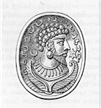

Libanius, " Julian the Emperor" (1888). Monody: Funeral Oration for Julian
RIGHT were it, my friends, that the thing for which I and all mankind were praying, had been accomplished----that the power of the Persians had ere this been overthrown; that Romans, in the place of Satraps, were governing and administering their country according to our laws; that our temples at home should be decorated with the trophies brought from thence, whilst he that had achieved this success, seated on his imperial throne, should be receiving our panegyrics upon his victory; for so were it, I ween, but just and proper, and a fit return for the numerous sacrifices which he had offered. But since envious Fortune hath proved stronger than our well-founded hopes, and he has been carried back from the confines of Babylon a corpse, who had come so near to the accomplishment of his enterprise, whilst all the tears it was natural to drop have been shed by every eye, and it is not in our power to prevent the end----let us do what is left for us, and, at the same time, the most acceptable service to him who is no more; before a different kind of audience1 let us discourse upon his achievements, since he himself has been debarred upon hearing our |123 eulogy upon the deeds he has performed. For, in the first place, we should be unjust if, after he had braved every danger for the sake of gaining praise, we on our side should defraud him of the prize of his exploits; and secondly, it were the basest of conduct, that he, when dead, should not receive the same homage wherewith we honoured him when living, besides its being an act of the lowest sycophancy to pay court to those who survive, but to forget those who are departed. As for the living, though one should not gain their favour by means of speech, yet one can do so in many other ways; but with respect to those who are gone, one way only is left to us, namely, eulogies and speeches handing down their virtuous actions to all time to come. Though it has been my constant endeavour to sing the praises of this hero, yet have I ever found niy words fall far short of the greatness of his performances; and most certainly I was never vexed if the merit of my sovereign and friend went beyond the range of the ability of one who loved him, for I regarded this as the common gain of the public, that he who had succeeded to the government for the salvation of the community, should not leave it possible to any speech to be commensurate with his own actions. And when it is not in my power to extol as they deserve only his exploits upon the shores of the Western Ocean, what figure shall I make to-day when obliged to comprise both them and his expedition against the Persians in a single discourse! Nay, I believe that even shovild he obtain leave to return from the gods below, for the purpose of aiding me in the labour of this discourse, and unseen by all take part in my task, not even so would due measure be exactly meted to his actions; but they would be described in a better manner than is now possible, and yet, in all likelihood, not even then fully described.
What then must I expect to suffer in undertaking so great a task, without such powerful help! But were I not assured beforehand that you all are not ignorant that |124 victory belongs to actions, and at the same time yon take pleasure in their description, it had been better for me to hold my tongue; but since on the former occasion you applauded me, and listened with satisfaction to my words, I do not think there is any just pretext for silence, and therefore will endeavour to pay my debt to my sovereign and friend.
There have been several emperors not deficient in the art of government, though not distinguished by birth, knowing how to protect their empire, yet ashamed to declare from what parents they sprung,2 to such a degree that it was a hard job for those who lauded them to salve that sore; but in the present case there is nothing that I cannot parade for his glorification; for at starting, as regards his family, his grandfather 3 was an emperor, one who above all others held riches in contempt, and in a special degree won the affections of his subjects; whilst his father was the son of an emperor and the brother of an emperor, and one who had better right to the throne than he who got it;4 but nevertheless he did not assert his claim, but wished success to him who seized the power, and continued to the last to live with him in sincerity and affection; he married the daughter of a prefect (a worthy and sensible man, whom even the foe that had vanquished him respected, and exhorted his own friends to take him for a pattern in the exercise of power),5 and he became the sire of this |125 admirable person now lying before us, and complimented his father-in-law by giving his name to his son. Constantine bad no sooner ended his life, than the sword passed through almost his whole house, fathers and children alike; but this one escaped the general massacre, as well as an elder brother by the same father; the latter having been rescued from destruction by an illness which it was supposed would result in death; the other by his tender age for he had only just been weaned. That brother devoted himself to different pursuits than literature, thinking that in this way he should less expose himself to the malice of his enemies;6 but this one his appointed destiny stimulated to the love of learning, and he spent his life in that pursuit in the greatest of cities after Rome, going regularly to school----he the grandson of an emperor, the nepliew of an emperor, the cousin of an emperor! not strutting arrogantly, nor annoying people, nor claiming public attention by the multitude of his attendants, and the bustle they produced; but an eunuch,7 an excellent guardian of his modesty, and another tutor not without some tincture of learning, accompanied him; his dress of the ordinary kind; his looks not contemptuous towards others; salutations to whomsoever came in his way; no rude repulsing of the beggar; and when invited entering a house; and stopping still even before he was called; and taking his place where it was the rule for the rest to stand; and being addressed in the same way as the other scholars; and taking his departure in company with the rest; and seeking for no precedence over them; so that anyone coming upon them from outside, and looking at a class, and not knowing who and whose children they were, would not have discovered in any outward circumstances the superiority of his rank. Not |126 however that he was on a level with those schoolfellows of his in all respects, for in the understanding and catching of what was said, and in retaining what he had caught and in repeating the same without difficulty, he made a vast difference between the others and himself, which, when I perceived, I was grieved that I myself had not the cultivation of so fine a mind; because a certain good-for-nothing sophist 8 had received the youth in charge as a payment for speaking evil of the gods; for the youth was brought up in the same notions about religion, and had to put up with the silliness of his teacher's discourses, in consequence of the war waged by his guardian against our altars: for now he was nearly grown up, and manifested the princeliness of his character by many striking instances. All this troubled the repose of Constantius; and he being afraid lest the vast capital (that possessed such influence in determining the choice of sovereigns, and was in point of strength a match for all the rest put together), should be attracted by the eminence of the boy's character, and that some trouble to himself might be the consequence, he sends him away to the city of Nicomedia, as a place that did not inspire equal apprehensions, and yet offered facilities for his education. He however did not come to my lectures, although I had for some time been holding classes there, and had exchanged one city for another, choosing that which offered tranquillity in the place of one that swarmed with dangers; but by purchasing copies of my lectures he kept up a constant conversation with me. But the cause of his taking so much pleasure in my discourses, and yet avoiding their author, was that the wonderful sophist above-mentioned had bound him by many strong promises neither to become, nor to be called my visitor, nor be entered in the list of my pupils; for which thing the youth being angry with him that had so tied him down, and yet not wishing; |127 to break his word (although desirous of my acquaintance), he found out how he might without perjuring himself have the benefit of my lectures, by procuring through heavy bribes one to be the communicator of what had been said by me day by day.
On which occasion he displayed in the highest degree the force of his natural abilities; for though never in my company, he was superior to those constantly with me in the imitation of my style, and through this circuitous course he outstripped their plain and straightforward one in the production of the fruits of study; from which circumstance, I believe, there is in his works composed after this time a certain family likeness to my own, and he was thought to be one of those that come nearest to me in this respect. Now his occupation lay in pursuits of this kind; meantime his brother obtained a share in the empire, that is to say, in the secondary rank; for as a double war was upon Constantius' hands, namely, the first one with the Persians, and that which came on top of it against the usurper (Magnentius), he stood in need, assuredly, of a colleague; and Gallus is despatched from Italy on the road to the East----and the same circumstance that had happened to his father before, now became the case with him-----that is, he was now brother of a reigning prince. The latter marched through Bithynia attended by his bodyguard, and the two brothers had an interview; but the change of fortune of the one did not pervert the disposition of the other; neither did he take his brother's elevation to empire as a motive for indolence; on the contrary it increased the desire he felt for learning; he augmented the labours he took in its pursuit; for he thought that should he have to continue in a private station he would possess wisdom in the place of imperial power----a more noble treasure! whilst should he ever be raised to the sceptre, he would adorn his dignity by his wisdom. For this reason he employed the light of day for his studies, and when night overtook him, the light of |128 fire; he did not make his wealth any greater, though he had every opportunity for so doing, but his mind more accomplished; and at last having got into company with those who were full of Plato, and hearing from them about the gods and genii, and those that had really created, and do maintain the universe, and what the soul is, and whence it came, and whither it goes, and by what things it is submerged, and by what is it captured, and by what it is weighed down, and by what it is elevated; also what are its bonds, and what its liberation; and in what way he might succeed in escaping from the one and attaining to the other----"he washed away the brackish tale with a drinkable story;" and having cast out of his mind the whole of the nonsense that previously occupied it, he supplied its place with the beauty of the Truth; as though replacing in some grand temple the statues of the gods previously prostrate in the mud. Now, he was another man in these respects, yet he kept up his former profession, for it is clear he had no liberty of conscience. Aesop would have written a fable on the subject, not the hiding of the ass under the lion's skin, but the lion under the hide of the ass, because he had learnt that which was better worth knowing, yet pretended to what was the safer to hold.
His reputation being spread abroad in all directions, all persons in the service of the Muses (and even of the other deities) flocked to him, some by land, others by sea, anxious to see and to converse with him, to say something of their own, and to hear him talk. But when they were come they found it not easy to depart; for the syren detained them not only by his words, but by his natural power to enchant; whilst, by his knowing how to love sincerely, he taught others also how to do so well; so that they being cemented together fittingly were not separable without difficulty. He possessed, then, universal knowledge, gathered up and put to use----poetry, rhetoric, the systems of various philosophers, much acquaintance |129 with the Greek language, and not a little of the other [Latin]; for he cultivated both; and 'twas the prayer from every mouth (of sensible people), that the youth had been made the manager of affairs,9 to put a stop to the ruin of the state, and that one had been appointed to tend the sick who understood how to treat maladies of the kind. I would not indeed say that he blamed these wishes, neither make this boast on his account, I say that he also desired it, but that he desired it not out of love of luxury, or riches, or the purple, but for the sake of restoring, through his own labours to mankind the blessings whence they had fallen, both others and particularly the worship of the gods----a desire with which he was especially filled, seeing, as he did, the temples lying desolate, and the ceremonies of religion put a stop to, and altars overturned, and sacrifices suppressed, and priests expelled, and the revenues of the temples divided amongst the most licentious of men;10 to such a degree did he feel all this, that I believe had one of the gods promised him their restoration by other hands, he would have shunned the imperial dignity with all his might. Thus he did not. aspire to the possession of power, but to the means of doing good to his states. Now, as the wish was growing strong in the bosoms of all educated men, that the world should be cured of its distresses through this man's prudence, against his brother Gallus there came a false accusation, and letters were discovered containing the blackest treachery; and when the culprits were punished 11 |130 for this (for he was not a likely person to reward them for it, after having been thus provoked), it was decided at Court that he who had inflicted punishment was guilty for what he had done----so he was destroyed in silence, the sword having anticipated his defence of his conduct. Upon this our hero was arrested and kept a prisoner in the midst of armed men of fierce look and rough voice, and, by their actions, making imprisonment appear a trifle;12 to this was added his not being stationary in one place of confinement, but having to change one prison for another for the mere purpose of annoying him. And this treatment he suffered though no charge was brought against him, either small or great----for how could that be, because he had lived at a distance, from his brother, of more than three hundred posts?13 and even letters he only sent to his brother rarely, and those confined to mere compliments; in consequence of which no one came forward to accuse him, even falsely; but nevertheless, he was tormented, as I have said, for no other reason than because the two had one father. On this occasion again, he deserves to be admired for not having courted favour with the murderer by declarations against him that was dead, nor yet exasperating the living by speeches in defence of the same; but whilst he honoured the memory of the one by secret grief, he gave the other no occasion for a second murder, strongly as he desired it. So well and honourably did he bridle his own tongue, and this, too, though the annoyances that surrounded him rendered it no easy task; so that by his patience he gagged the mouths of the wickedest of men. Nevertheless, not even this |131 would have sufficed for his preservation, nor have checked the malice of those enraged against him without a cause; but an "Ino daughter of Cadmus," looked down upon him, so tempest-tossed, in the person of the wife of Constantius----the one she pitied, the other she softened, and, by dint of many prayers, obtained his liberty, longing, as lie was, for Greek, and, above all, for that "Bye of Greece," Athens, to send him to the desired place. Assuredly this marks a soul come down from the gods, that when he set about the choice of a residence, did not look out for gardens, or palaces, or forests, or 14 lands situated upon arms of the sea, or the pleasure arising from other sources, numerous as they are, all of which were before him, if he remained in Ionia----but he esteemed as trifles what others esteem important in comparison with the City of Minerva, the birthplace of Plato and of Demosthenes, and of every other variety of wisdom. He came thither in all haste, with the view of adding to what he already knew, and to meet with teachers able to furnish him with something more than he already possessed. But when he held intercourse with them and afforded them the opportunity of testing him, whilst he got the same opportunity for trying them, he filled them with astonishment, rather than experiencing the same feeling himself; and he was the only one of the young men who came to Athens that went away having rather imparted than received instruction. On this account there was always to be seen around him, like a swarm of bees, a crowd of young and old, philosophers and rhetoricians; the deities, too, kept an eye upon him, being well aware that it was he who should restore to them, their hereditary rights. He was equally to be admired for his eloquence and his modesty, for there was no subject he ever discoursed upon without blushing: |132 all persons enjoyed his affability, the best men his confidence also; and first among them all was He, our fellow-citizen, the only man without reproach, that had subdued envy by his merit.
Now, it was the youth's intention to spend his life and end his days at Athens, and this he had judged the height of happiness; but the state of affairs demanding a second emperor because the provinces upon the Rhine were being ravaged, and the generals sent there were aspiring to more than their due,15 the man is summoned to rule who was studying philosophy at Athens, because, from this very pursuit of philosophy, he inspired with confidence in him that person who had injured him most deeply----for though he had been the murderer of his father and his brothers, some of them long before, but one recently, nevertheless he hoped that his pledges of fidelity would be faithfully kept, and that his good disposition would prove stronger than his causes for complaint. The one party, in truth, was not wrong in his confidence in the virtue of the other; but there was nothing in his own conduct to induce the latter to believe that the honour done him would not turn out a snare, for the blood already spilt gave him cause to suspect it; but there being no way to decline the offer, he, with tears in his eyes, invokes the goddess, and having prayed her to defend him, took his departure.
Being made colleague in power, he is sent off forthwith to face labours that demand the hands of a Hercules, for the affairs of the Gauls, who dwell most remote upon the ocean, were then in the following condition. Constantius being at war with Magnentius, who had usurped another man's empire, though he governed it in accordance with the laws,16 thought himself justified in trying every |133 expedient to upset his enemy, and actually by means of letters opens to the barbarians the Roman territories, giving them leave to take possession of as much as they were able, When this impunity was given to them, and the treaties binding the barbarians were annulled by these instructions, they overran the country, in the complete absence of anyone to prevent (because Magnentius had got all his troops in Italy),17 they make booty of the flourishing towns of Maesia; villages are destroyed, walls battered down, property carried off, women and children, and magistrates followed the train carrying, poor wretches! their own goods upon their shoulders; whilst he that would not submit to be a slave, seeing his wife and daughter a prey to violence, wept and slew himself; and after our goods had been transported to the enemies' country, the conquerors cultivated our land with their own hands, but their own territory by the hands of their captives. And again, those towns that had escaped sacking through the strength of their walls, had no land except an extremely small portion left for their support, and therefore were consumed by famine, and were driven to every possible resource for food, until they were reduced to so small a number of souls that their towns served them both for towns and fields, and the uninhabited part within the fortifications was sufficient to be cultivated; for the ox was yoked, the plough was dragged, the seed was cast, and the wheat-ear sprung up, and the reaper, the thresher, and all suchlike occupations were seen within the city gates; so that one would not have said that those carried away captive were any more to be pitied than those left at home.18 And the person that had bought his victory at so |134 dear a rate, at first indeed rejoiced and boasted himself, but when his treason had come to light, and Rome was all but crying out against him on account of being thus dismembered, he had not the courage to drive away the insolent spoilers by running any danger of his own; but obliged the youth to turn soldier, who had just been dragged from the schools into the din of arms; and, strangest thing of all, he was anxious that one and the same person should prove at once stronger and weaker than the enemy, doing the former out of his desire to recover his territories, the other out of envy to his colleague. And that he had sent him off quite as much to perish as to conquer, he immediately made evident: for though he possessed a military force as great as had previously kept these empires in order, and numerous foot soldiers, numerous cavalry, whose invulnerability, by reason of their armour, is, I think, most formidable,19 he gave orders that he should be followed by no more than three hundred of the very worst of his infantry,20 pretending that he would find soldiers in those long before stationed whither he was bound, these being men who had long been taught how to be beaten, and whose trade it was to be blockaded.
Nothing of all this disturbed our hero, or rendered him timid; but though he then tasted arms and war for the first time in his life, and was about to command cowardly troops against foes invariably victorious, he wore his armour as though he had from the beginning handled the shield instead of books; he marched as boldly as though |135 at the head of ten thousand Ajaxes. Two things made him such as he was----the one his philosophy, and his knowing that good counsel is stronger than force of hands;21 the other, his confidence that the gods were on his side. For he had learnt how that Hercules had escaped from the Styx through Minerva's interposition. Of the good will of Heaven towards him, the tokens were from the first as plain as he could wish; for though he was summoned out of Italy in the dead of winter, when it was a very possible thing for anyone not having the shelter of a roof to perish through the frost and the snowfalls, he enjoyed so cheerful a sunshine in his journey that they all marched along calling the season spring, and the cold was vanquished before the enemy was beaten. And again, the following was a presage of better fortune: as he was passing through a little town, the first he came to in the province committed to him, a crown of branches (for the townsfolk tie many such on high from strings stretched from the house-walls to the pillars), one of these crowns wherewith we decorate our cities getting loose from its fastening, dropped upon the head of the prince and fitted it exactly----a shout arose on all sides. By the crown, I fancy, were foreshown his future trophies, and that he came to conquer. And if the sender had allowed him to set to work immediately, and carry out his own plans, he would have had at once all the benefit of the change; but, as it was, he was master of no one thing beyond his general's uniform----his officers were his masters; for such had been the determination of the person who had sent him that the latter should direct and he obey.22 But he remembering Ulysses, and the deeds of Ulysses, put up with all this. Now it so happened that it pleased the commanders to |136 remain inactive ("to sleep on"), and this conduct made the enemy bold, seeing that they retained, now that the prince was come, the same superiority as they possessed before. But nevertheless, though he was thus hampered in the beginning, and went around the provinces merely for the purpose of inspection (for this was the only authority granted him), yet his name and presence had such influence that forthwith one of those towns that had been long blockaded, and cooped up,23 sallied forth and cut off the barbarian that was occupying their land close up to the walls, and another town did the same to another horde, and so on; whilst a daring night escalade was repulsed by a handful of old men, long discharged the service on account of age. For the enemy had brought ladders and set them up against an unguarded gate (a plan through which they had surprised many towns); but the others, so soon as they discovered the attempt, making a weapon out of whatever came in their way, ran with their decrepit feet, shouting aloud the name of the prince. So the old fellows got the better of them (just like those of Myronides); some of the enemy they slew, others threw themselves down from the wall and were killed. From another quarter was made a sally against the barbarians by young men never used to such things in the time before. So the one party turned and fled, whilst the others revelled in their slaughter----not that they saw the prince, but had been encouraged by the fact that he was near them. Others again, who were intending to desert their habitations, cast away their fears and remained there. And when the barbarians, sallying out of a thick wood, had attacked the rear of his line df march, the whole affair took such a turn that those who had hoped to harm him were themselves cut to pieces, and he that slew an enemy brought in as a proof the head of the slain; for a certain price was set on every head, and the great eagerness for cutting off heads |137 was its natural result----for that most clever of men purged their souls of cowardice by means of the lust of gain, and the wish to get something incited them to be courageous. Such of the barbarians who had taken refuge in the islands formed by the Rhine, fell a prey to those of our men that reached them either by swimming or in boats, and our towns were provisioned with their flocks and herds. And of the two largest cities of the province, the prince having found the one reduced to distress through the innumerable attacks of the barbarians, the other totally depopulated and lying in ruins from its recent sack, he lent a helping hand to the latter for the purpose of its rebuilding, and stationed a strong garrison within it. The other, so utterly destitute of all things, that the people were forced by necessity to feed upon things contrary to all custom,24 he encouraged to better hopes. Seeing this, a king of no inconsiderable part of the enemy's country, came over to make his excuses, on the ground that he had done no great harm, and to solicit his alliance; and because there seemed some justice in what he said, a truce is agreed upon for a short time, for he made the barbarian more submissive through the fear of what was to follow. In this manner, and to a yet greater extent than this, he inspected the province, and grew strong, although he had not yet attained to the full authority of doing what he had in his mind.
And when that fellow 25 was got rid off that was so afraid of the enemy, and so insolent to his friends, and there came as his successor (Sallustius Secundus), a man of the highest character in other respects, and not without experience in military affairs, and most of the obstacles in his way had been removed----then, truly then, the time had come to the prince for the full display of his |138 ability. To take a review of the facts: when it appeared to the elder one (the Prefect) to be advisable to make an inroad across the river upon the enemy, a thing which his junior had long been wishing for, and chafing against the restraint by which he was bound----then Constantius perceiving that his forces were but small, and not equal to his courage, despatched to his aid a double number of his own troops----that is to say, thirty thousand foot soldiers, appointing for their commander a person (Barbatio) that was supposed to know how to use his power. It was fixed that the two armies should be joined in one, but when there was no great distance between both as they drew together, the elder general being afraid his junior should get a share in the victory, and at the same time thinking his own force sufficient for the purpose, gives orders not to unite with the other army, and crosses the river alone. But whilst he is throwing a bridge of boats over the river, the barbarians cut down a wood higher up, and let great trunks of trees float down the stream, which striking against the boats, scatter some, tear loose others, and sink others to the bottom. His first attempt being thus frustrated, the general went off precipitately, and his thirty thousand troops with him, whilst the enemy were not content with the having suffered no loss, but thought it was now their turn to inflict some; they crossed the river in pursuit, caught him up, slew some of his men, and returned home with songs of triumph; they also followed up one action with another, and from words they proceeded to what comes next.
Now when they were all got home again, and the prince felt his strength, he provisioned with corn both castles and towns out of the spoils made upon the enemy, employing for this purpose, as far as was possible, the labour of his own soldiers. The ruined places, too, were rebuilt; and the prince, though in winter quarters a long way from the Rhine, was able to get early intelligence of the movements of the enemy by means of couriers |139 receiving the message in succession: for previously the large extent of country lying desolate had precluded him from the discovery of their designs. In this way, indeed, when they (the Germans) learnt that the Romans, on Roman land, were reaping the crops that belonged to them, they were indignant, as though their paternal fields were being cut by strangers, they sent a herald, and by his hands they exhibited the letters (of Constantius) which made the land their own, and declared "that he was contravening the determinations of his senior colleague, and must confess as much; that he must either abide by the written orders, or, if he wished for more, must expect to fight for it." But the prince said that the man had been sent merely as a spy, otherwise their chief would not have been so audacious as to send such a message, and therefore detained him; and remembering himself the exhortations which he had heard the generals of old delivering in history, and well aware that speech of the sort preceding action renders the soldier more courageous for the struggle, he delivered a harangue which I would very gladly have inserted in the present oration, but as the rule in such cases does not allow it, I will only say that it at once made fighting more to the taste of his hearers than doing nothing was before.26 It was determined that the cavalry should form either wing, the legionaries occupy the centre; the best men of these two arms to be in the right wing around the prince. This order ought to have been concealed from the enemy; it did not, however, escape them, owing to the treachery of some deserters. And when the enemy had effected a crossing of the Rhine, the prince, though it was in his power to prevent it, would do nothing of the sort, nor even fall upon a small detachment of them, but as soon as there were thirty thousand of them over, he came down before that |140 several times as many should reinforce them, for they had resolved, as was afterwards ascertained, that not one of their fighting-men should be left at home. Both things, therefore, are worthy of admiration in his conduct----that he did not attack the first force, nor wait for that which was on the move. The first would have been trifling, the second a matter of the greatest danger; the one would have been the conduct of a timid, the other of a rash commander. For this reason he did not prevent their passing over to a larger number, and by a great deal too, than his own force, whilst by his attack he checked what was flocking in to their aid.
And as for the barbarians, who were well informed of his arrangements, the braver part of their men were set against the better troops on the Roman side, whilst they had strengthened their own right wing with a reserve which they concealed behind an elevated water-course, overgrown with reeds, that country being marshy, that concealed them sitting down. Nevertheless, they did not thus escape the eyes of the Romans upon the extreme left; but these as soon as they discovered them ran down with a shout, and starting them out of their cover, began the chase, and threw into confusion by their means as much as half their army, flight causing flight, that of the first occasioning that of the second, and in this engagement there is something similar to the sea-fight between the Corinthians and the Corcyrseans, for in that one also it was the fate of either side to be beaten and to beat; for in reality each side gained the day; for when the right wing of the Romans, surrounding the prince, was hard pressed (being the picked men of one side, and assailed by the picked men of the other), then not even those who carried the standards, soldiers the most practised in keeping their place, any longer preserved their order, and were giving way, the prince shouting aloud and copying the words of the Son of Telamon (for the one said, "that were the ships destroyed no escape remained for the |141 Greeks," whilst the other declared "that if they were beaten the towns would close their gates against them, and no one would give them food"), added at last "that if they had determined to fly they must first kill him, and then run away, for that so long as he was living he would not suffer them;" and at the same time pointed out to them those barbarians who had been worsted by those who had put them to flight; and when our men partly heard, partly saw this, and were shamed by the one, and inspirited by the other, they turned again and renewed the combat, and the disgrace was cancelled, and everybody engaged in the pursuit to such a degree that the guards of the baggage train, left on the top of the hill, were seized with a desire to take part in what was going on; and as they hurried down, and their running became visible, they presented to the barbarians the appearance of a larger force than they really were----there was no longer one of them that chose to stand his ground, so that the place was strewed with eight thousand corpses, the Rhine hidden by the bodies of those drowned through their want of knowing how to swim; the islands of the river were full of the dead lying about, whilst the victors went after those that had concealed themselves in the woods, whilst to the most remote barbarians corpses and arms carried down by the stream told the tale of the battle. But----greatest luck of all----when netting the fugitives on the islands, in this chase they caught the chief along with his subjects, and carried him off by catching hold of his hands, without stripping him of his armour, being a man very tall and very handsome, attracting all eyes both by his personal appearance and by his equipment. The sun after beholding all this came to his setting. The barbarian chief our prince questioned concerning his audacious attempt----he admired him so long as he used language that displayed courage; but when he followed up his spirited beginning with a base conclusion, showing fear for his life, and begging for |142 safety----much as he was disgusted with his behaviour, yet he did him no harm, nor deposed him, out of respect for his previous high fortune, and the consideration of the mighty change brought about by a single day. Which of the festivals amongst the Greeks could one compare to that evening, when the leaders were drinking with one another, and counting up to each other all those they had borne down in the battle, whilst some were laughing, others singing, and others bragging of their exploits! He that was debarred from food on account of his wounds, found a sufficient consolation in the wounds themselves; even in their dreams those warriors were conquering the barbarians, and during the night again they were reaping the pleasure of what they had toiled for in the day; for it was after a long, a very long, interval of misfortune that they had erected this trophy over the barbarians, and were the more greatly rejoiced by the unexpectedness of the event. And yet----whether it was that they were naturally cowards, but that Julian had made them heroes, like some god inspiring them with courage, and the strength to do what was greater even than too great for man. Nay rather, they were brave souls whom badness of their former leaders had paralyzed. And what is more glorious than to lead the good to the opportunity of exhibiting their virtues? But it was some deity, I believe, that, working unseen, had rendered their actions more splendid; and truly 'tis more respectable to fight with heaven on one's side, for in my opinion it is more to the glory of the Athenians to have performed what history tells at Marathon with the aid of Hercules and Pan, than had they achieved the same victory without the help of the gods.
Now any other man, after so great a victory, would have disbanded his army, and returned to his capital to feast his eyes with circus races and theatrical amusements, and have reposed himself----not so Julian. The bearers of the standards, who had given way, he punished in order |143 to teach them to keep their post; yet spared their lives, granting to their victory the remission of the capital sentence: but the Giant, the king, his prisoner, he sends to Constantius 27 as the news-bearer of his own fall; considering it to be his own duty to labour, but to give up all prizes of the sort to his superior----like Achilles conceding his booty to Agamemnon. The latter held a triumph upon the occasion, and plumed himself, and was glorious through another man's dangers; inasmuch as the German chief also, who had crossed over in company with the one in question, but had advised not fighting, Julian so terrified by what had happened, that he made him run off, and throw himself into the hands of Constantius. In this way the latter became master of both the kings, the one giving himself up, the other taken prisoner.
But I will repeat what was said above, Julian did not fall into the same weakness as those conquerors, whom a victory dismisses into amusements and idleness: he did not allow his soldiers, desirous as they were of it, to lay down their arms; but holding that what had been done was the act of men defending only their own, whereas it behoves the brave to exact vengeance also for what they have suffered, he led them into the enemy's land, instructing and telling them that what remained to be done was short, and rather an amusement than a labour, as the barbarians were like a wild beast that had been hit and was waiting for the finishing stroke. And he was not in the wrong; for when they crossed over, the natives that were of age to bear arms deposited their women and children in the woods, and saved themselves by flight. But Julian wasted their villages with fire, and brought out all that was concealed; the trees did not hinder him: |144 forthwith there came an embassy using humble languaage, suited to their present evil case. The proposals were these, that the Romans should stop where they were, and desist from ravaging the country, and hold them in future for friends. He makes a truce, in fact, and the term of the truce was the present winter only; from which, even without a truce, the natives would perhaps have gained a respite. Thus much, then, did he concede to the vanquished; but he himself accepted not of it; for a thousand Franks,28 to whom snow and flowers are equally pleasant, who were pillaging some villages in the middle of which was a deserted castle, he shut up in this castle, surrounded them with a palisade, and forced them, by famine to surrender, whom he then sent off to his superior in chains,----a most unheard-of thing, for it is a law with those warriors either to conquer or to perish: and nevertheless they were made prisoners, having suffered the same fate with the Lacedaemonians at Sphacteria. Now the emperor, who received these prisoners, styled them a gift, and incorporated them with his own legions, believing that he was placing amidst the latter towers of strength: so much was each of these Franks a match for many ordinary mortals!
Now this was one exploit of such importance in the winter: another followed not inferior to it. A whole tribe having unexpectedly run down upon the country, he hastened off himself for the purpose of expelling them, with the aid of the troops stationed to guard the part in danger: the latter, however had discovered the incursion, and before his arrival had repulsed the enemy with no small loss of men. Thus the prince, both when present and when coming, was alike victorious: and these things he achieved just starting up from amidst his books; or rather, in marching against the adversary, he marched with his books, for he had always in his hands either |145 bodies or arms, believing that war was wonderfully assisted by philosophy, and that a prince competent to give counsel threw more weight into the scale than a fighting one. For example, the two following things were assuredly of the greatest advantage to the public, and display a certain ingenuity of invention----his augmenting the zeal of the brave by the rewards that he obtained for them from him who awarded things of the sort; and his making those that plundered the possessions of the enemy masters of all that they should seize: for this very thing was clearly of a piece with the order, that whoever brought in the head of an enemy should receive a piece of gold for his bravery.
His reputation spreading at once over the world, every soldier loved the man that was a lover of action; men of letters loved him also; and of those residing at Athens, such as were conscious of their merit, flocked to him, as of old the philosophers to Lydia, to the court of Croesus. But Croesus exhibited to Solon his treasures of money, because he possessed nothing more precious than them----whereas Julian unlocked to the comers the treasures of his soul, wherein 29 lay the gifts of the Muses: the prince also composed verses with which to compliment his visitors; and even now you may meet with and read the same. Thus, then, did he hold revels with the servants of Mercury and of Jove: but when the season gave the signal, he forthwith marches out, and upsetting everything in the neighbourhood of the river (the Rhine), he so terrified the natives that they begged leave to change their residence and become a part of the Roman dominion, thinking it more desirable to live under him than in their own country: they asked for lands and they received |146 some: and he employed barbarians against barbarians, deeming it a much finer thing to pursue with such means, than to fly in company with his own side. So much indeed was achieved without fighting: but having determined to cross the river a second time, and in the absence of boats having obliged his horse and foot to swim the river, he advanced, laying waste and taking booty, for there was no one to hinder him: late at last did the unhappy natives sue for mercy, just before the fire touched. But he, thinking that the day had now come which should heal all the wounds of the Gauls, at first dismissed the suppliants with contempt; but when they returned again, bringing their chiefs in person as suppliants, and they who bore the sceptre humbled themselves to the ground, then, reminding them of their long-continued insolence and their innumerable offences, he bade them purchase peace by healing the mischief they had done, by rebuilding towns, and bringing back persons. They promised, and did not fail: timber and iron were brought in for the rebuilding of the houses; and every one of the captives was set at liberty, and caressed by the man that just before flogged him, in order that they should bear no malice: whilst they had to give proof of the death of all whom they did not restore amongst those they had carried off; and the truth, in such cases, was judged of by the released captives. From the Ten Thousand soldiers of Xenophon, verily the first sight of the sea, after such a multitude of mountains crossed and toils endured, drew forth a shout and tears mingled with joy; and they embraced one another, the partners in so many dangers; but these men did the same, not when they saw the sea, but when they saw each other; some of them beholding relatives escaped out of slavery; the latter recovering again family and home: and all wept with them who, though not sharing in the relationship, yet beheld their em-bracings; and tears flowed, far sweeter than the former tears; some of which were shed for those long separated |147 from home, some for those now once more united. Thus, on that occasion, did the war both tear asunder and bring together the natives of Gaul; the first part being brought about by the cowardice of the leaders, the second part by their bravery. Now the town halls were filled, and population, and trades, and revenues of money grew apace, and the betrothals of daughters, and marriages of young men, and journeys from home, and feasts and solemn assemblies, resumed their former order; so that were one to style this prince the founder of those cities, he would not be far wrong. For some towns he gathered together again after they were dispersed, to others that were all but emptied he restored the inhabitants; and the fact of no one's fearing his neighbour inspired fear into others. No longer therefore on the approach of winter did any of the barbarians sail out on their accustomed piratical expeditions; but they stayed at home, and fed on their own things, not so much truly out of respect for treaties as out of fear of war; since even those that had not obtained a truce, the terror hanging over them warned to keep quiet. That greatest of all islands under the sun, and which the ocean encompasses, he viewed in his deliberations, and sends 30 (to Constantius) the accounts of the expenditure, which by name was military, but in reality was the perquisite of the governors; and those who committed this fraud he compelled to be honest. A second thing he did much more important than this, and extremely beneficial to the Gauls. The corn that was brought formerly from that island, after the sea-passage, |148 by way of the Rhine, the barbarians, after they had got the upper hand, did not allow to pass; so the merchant-ships were drawn up on the shore and left to rot, and but few put to sea; and of these the cargo was discharged in the seaports (on the Gallic coast), and waggons served instead of the river [for its conveyance inland];31 and the business was one of the greatest expense. Endeavouring, therefore, to change this, and thinking it grievous if he could not put the corn-trade upon its old footing, in the first place he appointed sailing 32 ships of war (which had not been done before), and planned in what way the river should receive the corn for him.
Whilst he was engaged in these matters, a subordinate prosecuted his superior for peculation. For Florentius used to sit in judgment as Prefect, and being trained to robbery, and having, too, on the present occasion been bribed by the defendant, vented his rage upon the plaintiff out of goodwill towards a brother in the trade. But as his rascality did not escape detection, and people were talking to each other of it, and the whispering annoyed even his own ears, he begged the prince to try the case himself. The latter, however, refused, on the ground that this power had not been given to him. And this Florentius did, not for the sake of obtaining a just sentence, but from supposing that Julian would side with him, even though he were proved guilty. But when he perceived that the truth had more influence than his favour with the prince, he was grieved to the soul, and calumniated by letters [to Constantius] the person 33 with whom he [Julian] was most intimate, for egging on the young prince, and he caused his |149 expulsion from the palace, though he stood in the place of a father to the Caesar. In return therefore the latter did honour to his friend by a composition which to the present day testifies to his grief upon their separation, but whilst he smarted under the wrong, he at the same time stuck fast to what was left him; nor did he become any the worse disposed though so greatly injured, nor did he think it right to exact vengeance from the Roman empire for the ill-treatment he had suffered: on the contrary, he went down to the very Ocean and rebuilt a city called Heraclea,34 the work of Hercules, and he brought the corn-ships into the Rhine, whilst those who were expecting to prevent their entrance were ready to choke with rage, but yet unable to hinder him. He then marched along, skirting the land of those under truce, in order that he might not in spite of himself do them any damage by marching through them against the enemy. And so at once the transports sailed along, and the army of the enemy moved in line with them with the object of preventing them from throwing a bridge across the stream. On this occasion let each contemplate this consummate general, and how there was no impossibility that he did not at once contrive to meet! For when as he advanced and reconnoitred the opposite bank he espied a suitable place, such that if occupied it would afford security to the occupiers, having left behind some vessels and a small body of his own troops in a hollow place of his own bank, he advanced himself and obliged the enemy to move on an equal distance: but when he pitched his camp at night he gives the signal to those left behind to cross over and seize the place. These obeyed orders, and took possession of it, whilst the others returned and made a bridge, commencing from their own side and terminating in the place that had been occupied. This |150 inspired the barbarians with the idea of more than one bridge having been made, and they supposed that there were not a few of the dangers surrounding them that they were not aware of. Therefore they thought better of such as had already come to terms, and came themselves begging for the same treatment and upon the same conditions. But Julian after burning and spoiling their land, when at last he was satiated, comes to terms with them; and again occur the restoration of captives and many tear-moving scenes, similar to the first.
Now when the Gauls and the surrounding Barbarians had thus resumed their original conditions, the former blooming once more, the latter drooping; the former engaged in festivals, the latter lying in lamentations; the one having lost the power which they thought they should hold for ever, the others having recovered the force to which they never hoped to return again; and every voice was singing his praises, not so much for his success in arms as for his sagacity; there fell upon him envy on the part of the man that owed him triumphal wreaths: and the part of the army that was in fine condition and ready for all service,35 this person summoned and sent for, whilst that which was invalided and formed a cypher instead of a reality he allowed to remain, his pretext being the Persian War, and that the peaceful state of Gaul did not require an army; just as though oaths were not easily trampled upon by the faithlessness of barbarians, and it were not needful that the security of arms should be added to that of treaties of peace. I think, however, that Constantius did not require any larger force against the Persians than what was already with him, for a part was sufficient; and after having assembled so great a host he would never |151 have come to blows with the Persians, because he had resolved to defer ib for ever. Far different, however, was his motive: he wished to blast the prince's actions and growing reputation; nay, rather to ruin that which he had gained, by bringing again upon him and his few worn-out soldiers the flower of the barbarians, for he was desirous that a contrary report to the then prevailing one should be everywhere spread abroad, namely, "that Julian himself is shut up and besieged, that nothing checks the enemy, but they are again taking towns, and pulling down cities, and seizing upon and cultivating the land of others." For he was well aware that however good a general that prince might be, he would suffer the same fate with the pilot of a great ship deprived of sailors, for not even his skill would compensate for the want of the whole crew to the vessel. Thus did that most excellent sovereign begrudge the power he had himself bestowed to him that had shaken off the yoke of the barbarians.
The high-minded prince, therefore, being reduced to desperation, and seeing that his ruin would be the consequence both of obedience and of disobedience (for the stripping himself of his forces involved his slaughter by the enemy, but his retaining them by his friends), he preferred to be left alone and meet his fate rather than seem to be disloyal; deeming more tolerable the blow from the enemy than that which his kinsman was about to strike him. Thus he gave permission to the sycophants of his elder colleague to do what they wished; and these, beginning with his very guardsmen and those whom he most trusted, rushed through the whole army picking out men until they left him soldiers fit for nothing but to say their prayers. And he put up with this, not indeed without tears, yet he thought proper to suffer it. But when the dispersed cohorts were set in motion from all quarters, a lamentation was raised to heaven from every side, from poor and rich, slaves and free men, farmers, townsfolk, men and women, young and old, thinking they |152 were all but cast for a prey to their enemies, and that the evils long since 36 eradicated were about to spring up once more. But above all, those women that had had children by the soldiers point to their infants, especially those at the breast, and shaking these on high instead of supplicatory boughs, besought the prince not to betray them.37 When the latter heard all this, he advised those who were come from Italy to lead the soldiers off by a different route, and keep them far away from the city in which he was stationed and was then residing, for he was afraid, I suppose, lest they should do what they actually did well in doing. But as those fellows (the imperial commissioners) paid no attention to his advice, but led into the city the flower of the legions, of whom he was henceforth despoiled, the entire population began to entreat them to remain, and save all for whose sake they had laboured. They, on their part, felt pity for the petitioners, and were averse to the journey. The prince perceiving this, addressed them from the usual tribunal in front of the city, to the effect that there was no debating about what had been already settled by his superior. They for a long while received his address in silence, and made no response; but when it became evening, or rather about midnight, they put on their armour and surrounded the palace; they shouted out and gave him the supreme dignity and title. He was indignant at what happened; but nothing was to be done, except to forbid anyone indoors to touch a bolt. But when day showed itself they broke open a door and dragged him out, brandishing their swords, to the same tribunal; and then came a long strife between expostulation and clamour, whilst the one was speechifying in order to prevent the step into which he was being drawn,38 the others |153 endeavouring to vanquish him by their noise. But when he declined the fillet of gold, and sheltered himself under the excuse 39 of the ancient custom, a certain man, tall and superior in other respects, standing behind him, put round his head the torques he was himself wearing, and invested him with the higher dignity.
Vanquished, therefore, by necessity, and unable to repress the ungovernable passion boiling in them, he made his first display of high spirit in the case of the very men who had bestowed this power upon him, for instead of seeking means to find them pay, and courting them with large donatives, he made proclamation that they must take his will for law; and therefore it was his pleasure that no one of such as had opposed what had taken place should be molested, nor the sword be drawn against them, nor to terrify them by a look, nor annoy them by a word, but to treat in the same manner those that had fought against their purpose as those who had shared in it. And yet, what other man in his place would not have stimulated them, to vengeance? Not so he----he wished not to pollute his accession to empire with bloodshed or the charge of treason. For this reason he issued orders moderating their zeal; and forthwith those who had trembled made their appearance cheerful and bold, and stood around his throne, grateful for escaping death; for which escape they did not make a fitting return; but "in payment for a benefit they were not bound" 40 (according to the proverb), on the contrary, they plotted how to kill the prince by stimulating by great promises to the deed the eunuchs highest in office in the bedchamber. But when the murder was on the point of |154 accomplishment, a certain soldier was inspired by Apollo, and sang aloud what was about to happen, and called together the multitude to help, and traced out the conspiracy; and, wonderful to say, not even the creature who served as their instrument was put to death. But when he (Julian) perceived that those who favoured the other party, were conspiring close to him, and even had the impudence to say on one occasion that perhaps it were better for him to descend to his former station, and quit that which he now held; he taking ihe gods for the only competent advisers in such great emergencies, consulted them, and received answer that he must remain in the post he held. And having thus received the vote of heaven in his favour, as well as the unanimous sanction of the army, he despatches governors to all the cities; in place of bad ones, good men; in place of dunces, men of education. He also formed an army out of those who had been forced to turn banditti, the men who having joined Magnentius in his enterprise and been unsuccessful, had taken to the highways, and maintained themselves by unlawful means. These men he called to arms, giving them impunity to show themselves, and thus freed them from the necessity of crime, and travellers from the fear of them. Then marching to the Rhine, and having shown the Barbarians his head [with the imperial diadem], and having bound them with strong oaths, he hastened away to the contest sorely against his will,----or rather to the succession to the sceptre, without war against his kinsman: for he had learnt from the gods, and knew what was about to happen. But stop! I have omitted a circumstance well worthy of mention, and this must be related. When envoys were passing to and fro on both sides, and those from that part of the world (Julian's side) petitioning that he might continue in his present dignity [of Augustus] but to enjoy nothing more in reality ----those from this quarter insisting that he should descend entirely from that title, and return in all points to his |155 original condition;41 which meant for himself to perish, with the greater part, that was attached to him, of the army, and his friends to boot; for his own death he cared but little, but held it atrocious to turn traitor to those most dear, when these things were going on and Constantius was again having recourse to his old device of calling in the barbarians by letter, in the same way as before, and begging them as a personal favour to enslave the Roman territory----he allows but one only out of many to break their engagements. This one both plundered the country, and at the same time kept up a revel in the lands which he had gotten for his reward; and just as though he were doing no wrong, he used to go and feast with the generals of our side; and kept at his potations the very person who winked at his breaking the truce. Julian, however, crossed over into his country and inflicted on him a punishment that no one can blame: for when all those chiefs flocked together in great alarm who had kept their faith, and were grievously ashamed of this one's transgressions, and added oaths upon oaths of fidelity----he mounted upon a lofty tribunal in the middle of the Barbarian country, and looking from above upon their chiefs standing together with the multitude in the attitude of subjects, after partly reminding them of his benefits, partly threatening them in case of disobedience, he took his departure. And by this time a certain force had been got together, of which not so much the amount as the zeal was to be admired, who bound each other by promises and pledges that full surely they would do everything, endure everything for the sake of victory; and would fear nothing save the disgrace arising from the not keeping their word. But as the oath was going the round of all, |156 a certain man, or rather hermaphrodite,42 Nebridius, who was Prefect, having received this appointment from the elder emperor, found fault with what was being done, and condemned the oath, and refused it, giving those that had sworn it the name of Barbarians;43 such a sycophant was he. And having thus drawn down upon himself universal indignation, he would deservedly have been cut to pieces by the man who had already wounded him, naturally enough, but was saved by being as it were "enveloped in a cloud;" 44 and this mercifulness of Julian's some may with reason censure; so great, however, was the humanity of this our own sovereign.
Rushing thence like a torrent, mastering all that come in his way, ever growing in numbers, seizing upon the bridges, surprising his opponents in their sleep, feigning to attack them in a different quarter, but approaching them in the rear, making them expect something different and attempt things in vain; making use of the land, but when the rivers were not watched, sailing down them with a small party whenever it was possible; leaving the guards on the frontiers undisturbed, but taking possession of the towns; effecting all he had proposed through persuasion, through force, through stratagem. Such, for instance, was the following fact:----Having equipped his men in the armour of the soldiers whom he had captured, he sent them against a certain well fortified town; the people thought those approaching to be their own men, and opening their gates admitted the enemy. But the most pleasing thing of all was that----having seized beforehand on the beautiful Italy, and having also possessed himself in advance of the Italians, those excellent soldiers, |157 and their numerous and strong cities, and a territory sufficient for a great empire----on no one occasion was he laid under the necessity of fighting and bloodshed, but the mere opinion of him sufficed, with the news of the coming of the sovereign. Of mighty service also to his cause were the letters of that coward and traitor, with which he called on the Barbarians. Thus making his way by water and by land, through cities opened to him, and through opened camps; enumerating his labours in those noble manifestoes 45 which exasperated the hearer against the one emperor, and gained him over to the other, and this too when he was bringing a very inconsiderable part of his army with him. Yet the Macedonians revolted in his favour, as did also Greece, which hailed the moment for which she was praying in silence and without an altar----for there was none. Opened was the temple of Minerva and the temples of the other gods, the emperor in person opening them, and honouring them with gifts, and himself offering sacrifice and exhorting others to do the like. And knowing that the gods had been brought to judgment before the Athenians, he condescended to give in a justification of his own conduct; and he, the sovereign, appointed the people of Erechtheus for his judges----sending them his defence in writing. For he held it to be the privilege of a tyrant not to be judged, but of a lawful sovereign to give the reasons for his actions.
In the course of his expedition, also, he pacified by means of letters a quarrel which had broken out between the consecrated families, and which was splitting the city into factions. So the Athenians offered sacrifice after long intermission, and prayed the gods for what they meant to give though no one should pray for it. Now he still advanced, having divided his forces into three |158 bodies; and this, too, although Thrace was occupied by the opposite party; for he hoped speedily to get the better of them. And when he arrived at the Bosporus with the intention of seizing the passage, posts brought him news from Cilicia announcing the death of his senior at the Springs; whom, whilst talking bigger than Xerxes of old, and deliberating how he should treat the person of his opponent (for he fancied he had him in his power before he caught him), Jove, that (as Sophocles hath it) "hateth the vauntings of the boastful tongue," had hampered with disease and carried him off. Now to others the news looked like a fiction, a contrivance, and a stratagem----a thing that ought to be distrusted; but Julian sent for a book out of his trunk, and showed them certain oracles, much older than the intelligence, and verified by that intelligence; and how that the messengers were come by the sending of God; who had promised them a victory unstained by bloodshed, and warned him to make haste, lest in his absence someone else might seize the empire. Reading this, therefore, and seeing that the war had met with an issue so good and so much to be desired, and hearing of the death of a man that had entertained the feelings of a savage beast towards himself, he did not turn to feasting and carousing, and the amusements of the theatre; but now that the oracles were fulfilled, and land and sea were subject to him, and no one dared to look him in the face, and all were agreed that all should belong to one; no longer constrained to anything that he did not please; and when all the palaces were unlocked to him, he burst into lamentation, and his tears dropped upon the prophecies, and everything gave way to natural feeling; his first inquiry was about the deceased, and "Where is the corpse, and has he received the honours due?" So kind was he towards the man that would have imitated the conduct of Creon 46 towards himself! And his |159 attentions to the departed emperor did not stop here; he went down to the harbour of the capital, having assembled all the population, and whilst the corpse was carried across the water, he uttered lamentations; and held the coffin with his own hands, having laid aside all the marks of royalty except the robes----not deeming it right to blame the body for the things plotted by the soul. And after that personage had been honoured with the marks of respect befitting his station, the emperor made a beginning with the gods----that is, with the religion of the capital----by offering libation in the sight of all, taking pleasure in all its accompaniments; laughing at such as followed not his example; endeavouring to persuade, but not presuming to force their conscience. And yet terror was hanging over the corrupt; there was amongst them an expectation that they would have their eyes put out, have their heads cut off, and that rivers of blood would flow in massacres: "for the new sovereign will invent novel modes of compulsion, compared to which trifling will seem fire and sword, and throwing in the sea, and burying alive, and mutilation, and cutting to pieces:" for all these things had been done by those before him; and far more grievous than these did they expect. But he blamed such as did these things, as not effecting the object they aimed at; and had discovered there was no use in compulsion in matters of their sort: for though those that be sick in body one may cure by chaining them up, yet a false belief in matters of religion you cannot eradicate by cutting and burning: but even though the hand burns incense, the conscience blames and accuses the weakness of the body, and holds to the same things as at first; and 'tis an empty show of conversion, not a change of opinions: and the end is that part of them obtain toleration, and those put to death receive divine honours. Disapproving, therefore, of such measures, and seeing that the strength of the other party had been augmented by their slaughter, he avoided what he blamed in others; and such as were susceptible of |160 being reformed he led into the Truth, whilst those that preferred the worse part he did not drag there. He did not, however, cease exclaiming, "Whither are ye rushing, you fellows; and are ye not ashamed of considering Darkness brighter than the Light? Do ye not perceive that ye are affected by the same disease with the impious Giants, whose stature did not really differ from those of other men, so that they should throw their fabled weapons; but it was their contemning the power of the gods that gave rise to the fable!" For he well knew that he who handles this religion with understanding, will care for his soul above all things else, and of all the good things of the soul, for piety in the first place: for this has the same, the very same effect in human life as the keel in a ship, and the foundation in a house: for were he to make all men richer than Midas, every city greater than Babylon of old, and overlay with gold the walls of each city, yet should reform none of their errors in religion, he would be acting like a physician, who, having taken charge of a person full of maladies in every part of his body, should doctor everything except the eyes. For this reason he proceeded to the curing, in the first place, of men's souls, becoming their guide to the knowledge of those who in reality govern heaven, and holding dearer than his own kinsmen such as were instructed in these matters; esteeming as his friend him that was a friend to Jupiter, and as his enemy him that was hostile; or rather, as a friend to himself whosoever was a friend to Him, yet not as an enemy every one that was not yet a friend to Jove. For such as he hoped to convert in time, he did not chase away, but he enchanted and led them on, and the very men who at first refused, he finally showed dancing around his altars. But in the first place, as I have observed, he brought Piety, like a fugitive, home again; erecting some temples, restoring others, into others introducing seats.47 Fines were |161 paid by such as had used the materials of temples for building their own houses: and one might behold columns carried back some in ships, others on waggons, to the plundered gods; and in all quarters were to be seen altars, and fire, and blood, and burning fat, and smoke, and ceremonies, and diviners released from fear: and on the tops of mountains were pipings, and processions, and the ox that sufficed at once for the worship of the gods and the banquet of men. And because it was not easy for the emperor to go out of his palace every day to a temple, whilst constant intercourse with heaven was a thing of the utmost importance, a temple was built in the centre of the palace to Him who rules the day; and he himself took his part of the Mysteries and communicated thereof to others; being both initiated and initiating. He erected also altars to all the gods separately. And his first action ever on leaving his bed was to converse by means of sacrifice with the upper powers, in this respect to surpass Nicias of old, so far did he stretch the limits of his zeal in these matters; bringing together the things lost, and adding new to the old. His chastity gave him a claim to have this confidence; and he that contemned all sensual pleasures was allowed to have his divinity close to his temple: 48 for nothing was done there by night unworthy of such neighbours.
What, therefore, he had promised to gods and men before his accession, he thus brilliantly performed after it; such of the cities as kept their temples yet standing he was delighted with, even before this event, and declared them worthy of receiving the greatest favours; but those that had pulled down either all, or the greater part of them, he regarded as polluted; and though he gave them a share in his benefits, because they were his subjects, it was not without grudging. In doing this, and establishing and reconciling the gods to the earth, he resembled a |162 ship-builder who again equips a great ship, that has lost her rudders, with new ones----with this difference, that he was restoring the same defenders to the world.
After having made these regulations about the first and most important affairs, on looking into the state of the imperial court, and seeing a useless multitude kept for no purpose, a thousand cooks, and hairdressers no fewer, cup-bearers yet more numerous, swarms of waiters, eunuchs in number beyond the flies around the flocks in spring, and of all other descriptions an indescribable lot of drones, ----for the grand resource for the lazy and clever at eating, was to get themselves called and enrolled of the imperial household; and the piece of gold quickly produced the enrolment----these persons, then, whom the imperial treasury maintained to no purpose, he looked upon as an injury and not as servants----he expelled them forthwith. He also expelled along with them those numerous secretaries, who though holding the rank of domestic servants, yet pretended to make the prefects their subordinates; and it was not possible to live near them, nor to salute them at meeting, but they cheated, they robbed, they forced people to sell; some paying no price at all, others not the fair one; whilst some put off paying; some reckoned to orphans the fact of not hurting them for an equivalent of the money due to them; and they went about like the common enemies of all possessing anything fine, such as a horse, a slave, a tree, a piece of land, or a garden; for they considered that these things were rather their own property than that of the owners. And he that gave up his paternal inheritance to the stronger party, was an excellent fellow, and went off bearing this title in return for his property; whereas he who thought it hard to be thus treated was a murderer, a cheat, loaded with crimes, liable to punishment on many accounts. Thus making other men poor from rich, and themselves rich from poor, and growing wealthy through the poverty of those before opulent, and stretching forth their greediness to the |163 furthest limits of the world: they promised whatever they pleased on the part of the sovereign, and it was impossible to say them nay; but ancient cities were plundered, and beautiful things that had vanquished Time were brought across the seas, in order to make the houses of fullers' sons more gay than the imperial palace. And whilst these creatures were thus intolerable, there were many followers in each case, like lap-dogs, as the saying is, mimicking their mistresses, for there was not a servant of theirs that was not insolent, imprisoning people, pulling down, and embezzling, beating, ejecting, driving off, requiring forced labour on his land, to drive a pair of horses in his chariot, to be a master, nay, as great a one as his own lord----persons that were not satisfied with being rich, but were indignant if they did not participate in their master's dignity, as though by this means they could cloak, forsooth, their servile condition; and they, in league with their owners, had a purse that forced to tremble both street, prison, and city. These Cerberi, these many-headed monsters, he reduced to a private station, telling them to consider it clear gain that they were not put to death. A third band of rascals, officers that filched and picked pockets, and said and did everything with a view to gain, and who had defrauded their native countries of all due service from themselves, and had run away to wait upon the councils and law-courts, and culminating into imperial messenger, had bought for themselves the appointment of AGENTES IN REBUS,49 and their pretence was of being watchmen, in order that the emperor might be apprised of whatever was plotted against him, bat in reality they were shopkeepers. For just as these open their doors of a morning, and look out for custom, so did they talk about jobs to the brokers of such matters, who |164 used to bring the working-men, although silent, on the pretence of speaking ill of the government, under the lash of those fellows----not in order that they might be lacerated, but that they should pay for the not-suffering such treatment. And no one was beyond their range; neither citizen, nor sojourner, nor foreigner, but even he that did no harm was destroyed if he did not pay; whereas the very great culprit, by sacrificing something, got off clear. Now their greatest resource for getting money was any offence against the government; for instead of giving up the person convicted to the fury of those that were aggrieved, they took the part of the conspirators, instead of those who had put them in places of trust, for the sake of a bribe. Furthermore, by sending youthful beauties to visit persons that made profession of chastity,50 and thereby bringing them under the apprehension of loss of character, they stuck upon people entirely guiltless the evidence of liars; and had these two plans for very great sources of profit. And yet again, a third----more lucrative than both put together: by giving license to debase the coin to such as had the audacity to do so----out of the caves 51 where that business was carried on, they drew good |165 money in return for the forged, and revelled in luxury. In short, of the two sources of profit, the one lay in the unseen and clandestine; the other in what was public and open, and which received the colour of legality----being not much less productive than the first; so that on mentioning any province, they at once added the amount of money it was possible to draw from thence. These "Eyes," therefore, of the emperor, that pretended to bring all to light, and to make the bad virtuous through the impossibility of concealment, opened every road to villainy, and all but made proclamation of impunity, inasmuch as the preventers of crime, themselves sheltered the offenders ----like dogs turning confederates with the wolves. For this reason, it was as good as finding a treasure to have a share in these mines; for he that came an Irus, in a short time became a Callias. When, therefore, one "pumped away" after another, and the cities grew poorer, and those who carried on the trade grew richer, our emperor was long indignant at it, and declared he would stop it when he had the power, and having attained to power he did stop it; by dispersing the whole of that fraternity and abolishing the title and office in virtue of which they wasted and pulled down everything, employing his own men for the conveyance of letters, and not giving them authority to do things of the kind. This was, in fact, making the cities free in the strictest sense of the word (a)kribw~j); for so long as the man stood by, that had the power to do these things, it was impossible to breathe freely. One person was hit, another was on the point of it, and even to him that suffered no hurt, the expectation of being struck became equivalent to suffering the blow. Again, because the post-mules were worn out by unremitting employment, and because the lately mentioned persons killed them by starvation, whilst they provided |166 themselves with a Sybaris through their starvation (for what made the work excessive, and as it were hamstrung the beasts, was the fact that it was in the power of anyone that pleased to yoke a pair and drive off, and that the order of the emperor and of the imperial visitor (agens in rebus), were of equal force in this particular; so that the animals were never allowed to halt, or enjoy a feed; whilst the whip was never lifted off their backs to make them run, and twenty or even more were required for a single carriage; whilst as to most of them, some as soon as unyoked, dropped down dead; and others in the harness even before they were unfastened). From such a state of things, business that required despatch was impeded; and further, the cities incurred loss as far as money is concerned. That this department was in a miserable condition, the winter season particularly proved, the service of the post-mules being then interrupted in many places; so that the muleteers ran off and kept in the mountain fastnesses, whilst the hurrying travellers had no remedy save crying out and smiting upon the thigh; and not a few opportunities for business over-slipped their execution through the delays thus occasioned. I omit mentioning the horses that suffered the same treatment, and the asses still worse; the result being that the persons who carried on these services were completely ruined. This disorder, also, Julian put a stop to, by prohibiting all posting that was not absolutely necessary, and by declaring licences of this kind equally dangerous to grant and to receive; as well as by instructing his officers, some to keep beasts of their own, others to hire them when wanted. And a thing not to be believed was to be seen, that is, car-drivers exercising mules, and grooms horses; for, just as previously the animals had been spoilt by over-work, so now it was to be feared they would come to the same state through the long continuance of want of work.
In the next place he rendered the houses of his subjects |167 more opulent, for he exercised the same forethought with respect to the Councils [Curiae] in the towns, which of old used to nourish both with numbers and with wealthy persons, but these were reduced to nothing, all the members [Curiales] except a very few, having slunk off, part into the catalogue of the soldiery,52 part into the Great Senate; for others there was some other subterfuge to shelter them, so that they took their ease, and gratified their bodily wants, and laughed at such as walked not the same way with themselves: whilst those left in the Council, being a mere handful, were eaten up with expenses, and the holding of office ended to the greater part of them in their begging their bread. And yet who does not know that healthiness of the Council is the soul of the city? But Constantius, though curing men's souls with his "Word," 53 was their enemy by his actions, by transferring to other places such as evaded that duty, and by granting illegal exemptions. The Councils, therefore, were like so many old women, wrinkled, half dead, all rags: and those that administered justice [the Prefects] agreed with them that they had been and were hardly used, and though disposed to help them, were nevertheless unable to give them any assistance. But it was fated that these also should recover their pristine vigour: and deserving of all praise is that Rescript that every man must be called before the Council, and whoever had no valid ground for exemption should be enrolled in it. In this way he set the matter to rights, so much so that the halls proved too small for the number |168 of those entering the Council, for there was no more getting a substitute; nor an eunuch to let one off for a bribe; but the latter, as is the place for ennuchs, discharged servile duties, without giving themselves airs on the strength of their court liveries, whilst the other servants discharged whatever duties require writing, ink, and pen; and knew how to be modest in other matters----for that they had been taught by a master like this, to be content to labour honestly.
Even now, therefore, you will meet with many who in consequence of that intimacy with him, are better than any philosophers, and it is my opinion that all the rest, even the common rank and file, were then far from making gain their object, but coveted glory above all things else. And you remember that those very personages at whose approach we formerly fell down prostrate, as we do in thunderstorms, now, with these very same persons, when they dismount from, their horses in the public square, we shake hands and converse; and they hold it a greater mark of honour to be prouder than other people, rather than to inspire them with terror.
Law is an easy thing for princes to make (because that is their prerogative), but to do so to the benefit of the people, is no such easy matter, seeing that wisdom is required for that purpose; but this emperor made such laws, in addition to those he found in force, that men who lived prior to these laws of his suffered a great loss. The laws of like nature with those of his, amongst those that were in force in old times, but which had been repealed by the caprice of the sovereign, he declared to be again valid; regarding it as a more honourable object of ambition to acquiesce in things well done already, than to lay hands to no purpose upon things already settled. Next, let us consider the case of the persons who were punished [on Julian's coming to the throne]. Of the three who had enriched themselves through murders, the first [Paulus "Catena"] had gone over the whole world, accusing |169 people falsely,54 and owed ten thousand deaths to both Europe and Asia; so that all who knew the fellow were sorry that it was not possible to slay the slain, and to do so thrice over, and yet oftener: the second [Eusebius] besides having enslaved Constantius----being himself a slave, and what makes it still more shameful, a eunuch----had been the prime cause of the most cruel death of Gallus. The third man [Ursulus] fell a victim to the resentment of the army, for having defrauded them, as was reported, of the imperial donatives; nevertheless after his decease he met with some amends, for the emperor conceded to his daughter no small part of her father's property.55 Those, however, who had done injury to him personally (for there were, persons who incited others to seize the sceptre), and who had spared no terms, in any point against him, did not meet with the punishment they deserved; they were not put to death, but confined in islands, where they were taught how to bridle the tongue. Thus did he know how to avenge well others that had been wronged, but in matters against himself, he displayed this greatness of soul! He also went into the Senate, and made the supreme council sit down around him, which had for a long time been deprived of that honour; for previously it used to be summoned into the Palace, in order to stand stock-still, and hear a few words; for the emperor never went into the Senate, because from his inability to speak, he shunned a place that required an orator; whereas he, as Homer says of the good speaker, "haranguing without a stumble," sought after assemblies of the kind, and gave everyone that chose full freedom of speech towards |170 himself, delivering, now, a few words and sweetly, now pouring forth "like to the wintry snow flakes;" at one time imitating those Homeric speechifiers, at another, in that he was their superior in dignity, surpassing them all. Once while he was speaking, and praising some things, censuring others, and advising others, a message is brought that his preceptor was arrived, an Ionian (Maximus of Ephesus), a philosopher invited from Ionia; the prince springing down from the midst of the senators, runs to the door to meet him, inspired by the same feelings as Chaerephon towards Socrates; but the latter did so, being only Chaerephon, and in the palaestra of Taureas; whereas Julian was lord of all, and in the middle of the most dignified assembly; showing to the world, and proclaiming by his actions, that Wisdom is a thing more to be honoured than Royalty, and that whatever good was in him, this was the gift of Philosophy. He embraced and saluted him, as is the manner of private men to each other, or of princes to each other, and brought him in, although not a member of the Senate, thinking that he was not honouring the man by the place, but the place by the presence of the man; and having made a speech before them all, setting forth what he had been, and what he was become through his means, he retired with him holding him by the right had. What did he mean by this conduct? He was not merely, as one might suppose, paying the debt of his own education, but was encouraging youth all over the world, nay I would add old age also, to the pursuit of learning; for old men have ere this been stirred up by the love of knowledge; since everything that is slighted by the great is neglected by all; whereas whatever is held in honour by them is studied. Now he believing that literature and the worship of the gods are twin sisters, and seeing that the one was entirely extinguished, and the other in great part, in order that everything relating to these subjects should be set to rights, he brought it about, firstly by the honours bestowed upon the learned, and secondly by |171 composing treaties of his own, for he then immediately published two books, the work each of a single day, or rather a single night; of which the one 56 knocked down a fellow, a spurious imitator of Antisthenes, impudent without consideration by laying down the laws of the sect; the other contains many fine things upon "The Mother of the Gods." Part of the same plan was to render the cities intelligent by means of treatises; and to discard the barbarians at the helm of the provinces, who by writing 57 all in a hurry, and being devoid of common sense, upset the ship; but seeing those men had been pushed aside whose minds were well stored with the poets, historians, and writers whence the duty of a ruler might be learnt, he appointed them to govern the provinces. For this reason, when he was marching into Syria, each one welcomed him on the frontiers with a speech, a gift far more acceptable than the wild boars, fowl, and stags, that used to be offered to emperors;58 but instead of such things came speeches; whilst rhetoricians, as officers, took their place in the imperial train; amongst whom the governor of Cilicia [Celsus], a pupil of mine, and a very great friend of his, delivered the complimentary oration to the emperor, after he had offered sacrifice, and was standing by the altar, and the perspiration flowed in streams from both parties, from the speaker himself, and from him that loved the speaker. In consequence of all this, great was the blossoming of philosophy and high the hopes of advancement to such as had gone over to the pursuit of learning, and the trade of |172 the sophists improved when some persons commenced their education under them, and others, though late in life, frequented their schools, going to them with beards on their chins, whilst the work of their fingers thus once more made the business of the Muses flourish; and what was really best, once more began to be accounted most honourable; and things that are only suitable to slaves ceased to be more highly esteemed than what beseem free men.59 And yet what greater action can one name than his raising the gods, and that noblest gift of the gods, literature, into estimation out of the estremest neglect, giving free admission to sophists along the whole line of his march, providing for the right way as regards the holy gods, enduring cheerfully the length of the journey, its hardships, and the heat. He did not indeed accept the idle story about the piety of the Magi, for he was warned by the local deities, both that a plot was forming against him, and what were the means of escape. For this reason he altered the order of his march, and advanced more quickly than before, and so avoided the ambuscade. Entering Syria, he remitted the arrears of the cities, and when he had shown himself in the consecrated places, and conversed with town councillors on their seats, he hastened off to his vengeance on the Persians. He did not think proper to delay, nor to waste the season in his chair. But as both foot and horse soldiers were worn out, and begged for a little respite, he yielded to them, against his will again, for his soul was boiling over with indignation, but nevertheless he did yield to the necessity, after only uttering the exclamation, "that there would be many a one to let fly the taunt at him that he was in good sooth the kinsman of him who went before."
Let us now contemplate the emperor in his quarters, and see whether every season of his life does not offer actions deserving of our laudations. There came a letter from |173 the Persian court begging him to receive an embassy, and to settle differences by discussion. Now we others were overjoyed, we clapped our hands at it, and shouted out to accept the offer. He on the contrary ordered the letter to be thrown down with contempt, saying it were the most grievous thing possible that the cities 60 should lie in ruins whilst they were conferring together. He therefore sent the message back that there was no need for ambassadors, since they would very soon see him in person. Was hot this a victory before the conflict, and trophies before the battle! The very thing that we see occur in athletic contests, when it is enough for him who is greatly an overmatch for the others merely to show himself. And the fact that monarchs felt thus upon the mere appearof our emperor, is not too much to be wondered at (although it is certainly a wonderful thing to rout him that used to terrify one); but that after Constantius had denuded this country of troops, and Julian, who had succeeded to his powers, was still at a distance from those parts, the Persian made no attempt upon a single town, but remained quiet at the very sound of his name. This assuredly eclipses every prodigy! And thus was he minded with respect to the embassy, that what had taken place before demanded arms, not words. As for the soldiers, those that he had previously commanded 61 he knew were first-rate men in all respects, for they were vigorous in body, took pleasure in fighting, their weapons were of no bad make, and they went into battle calling upon the gods, whilst those soldiers whom he had succeeded to were indeed to look at both fine and tall men, equipped with their national arms, but in consequence of having often run away from the enemy they felt the same at the sight of the Persians as does, as Homer says, a man |174 in the mountains at the sight of a dragon; or, if you like it better, a stag at the view .of the hounds. But being of opinion that they had been cowed in spirit not merely through the incapacity of the commanders, but also through their going into battle without the aid of the gods, he remained in quarters for nine months, engaged in procuring for them this preponderance, for he believed that neither multitude of men, force of steel, strength of shields, all things, in a word, to be mere trifling when the gods fight not on one's side. And in what way he made them to be on our side was by persuading the hand that grasped the spear to touch likewise libation and incense, so that when darts were flying about they might have those to pray to that were able to prevent all mischief. And when words did not suffice, gold also and silver co-operated for persuasion, and through a trifling gain the soldier got a greater gain, that is through a piece of gold the favour of the gods, the lords of battles. For the emperor did not think proper to call in Scythians to help him, nor a multitude that would do harm through its own numbers, and would multiply the difficulties of the undertaking, but the far heavier hand of the celestial Powers; for these did he offer for helpers to such as sacrifice, namely, Mars, and Strife, and Fury, and Terror, and Fear; those of whom the will gives victory. Wherefore if one should say that he shot and cut at the Persians, whilst he was still tarrying upon the Orontes, he would say so with truth.
In this enterprise much treasure was expended; yet this expenditure is certainly more honourable than upon theatres, and chariot-drivers, and such as combat with "pickled" 62 wild beasts----none of which amusements had any attraction for this man. For even when the constraint of custom obliged him to take his seat in the Hippodrome, he kept his eyes fixed upon other things, paying honour at once to the day and to his own affairs---- |175 the former by his presence, the latter by continuing his attention to them; for no quarrelling, nor contention, nor shouting of the spectators diverted his mind from his meditations: nay, even when he was giving a feast, according to custom, to a motley throng, leaving the others to drink, he mingled words with their cups, only so far taking part in the banquet as not to seem to stand aloof from it. For what man ever did so strictly bridle his appetite, even of such as practise philosophy in a humble dwelling? What man has abstained so much from different eatables at different seasons,63 whilst doing homage to various deities at their various times; for example, to Pan, to Mercury, to Hecate, to Isis, and the rest severally? What man else has cheerfully kept so many fasts, engaged in converse with the gods? For truly in his case the story of the poets was a reality, and "one of those that came down from heaven grasped him by the hair," and departed after having told him something and received his answer. His other colloquies with the gods it were tedious to enumerate, but once, having gone up into Mount Casias, to the Casian Jupiter, upon an appointed noontide, he saw the god visibly, and on beholding him rose to his feet, and received from him a warning through which he a second time escaped an ambuscade. If therefore it were possible that a man should share heaven with the gods, he would have been their fellow partner, the gods themselves conceding to him their own abode. Bat inasmuch as his material body did not permit such a thing, they came in person to visit him, becoming his instructors as to what he ought to do, and not to do. Now, Agamemnon had Nestor the Pylian for adviser, a very aged man truly, but yet a mortal; but this prince had no need of men for such purposes, for of all mankind he was |176 "by a long shot" (e9k be/louj) the most sharp-sighted, since his fore-knowledge came from those who know all things. By these guardians was he watched over, and with them he often held intercourse; fasting frequently, and never burdening his stomach with these superfluous loads; so that he went through his business like a winged thing, giving answers to embassies one after the other, in the same day; writing letters to cities, to commanders of armies, to absent friends, and to those visiting him; listening to despatches read, examining petitions, making the hands of secretaries appear slow through the quickness of his tongue. For this prince alone had brought about the union of three different occupations, namely, of hearing, of speaking, and of writing: for to the reader he lent his ear, to the writer his voice, and to such as required his signature his right hand, and he had the gift never to make mistakes in anything. Rest was for his ministers; for himself it was to skip from one kind of work to another, for whenever a cessation of business occurred, after breakfasting just sufficient to support life, he was not beaten by the cigale, but throwing himself upon piles of books he sung away,64 until at eventide the cares of the empire again called for him; and the supper was yet more frugal than the first meal, and his sleep just so much as was consistent with such a moderation in food.
Afterwards again came another set of secretaries that had passed the day in bed; for his servants stood in need of relays, and they got their rest from one another: but he only changed his kinds of labour, and alone laboured at everything----going through the transformations of Proteus in the palace; being at once priest, book-maker, diviner, judge, general, soldier----everywhere a saviour! Neptune was shaking down the principal city in Thrace; messages came one after the other that unless someone |177 would propitiate the god the ruin of the place would be consummated. He no sooner heard it than, standing in the middle of the garden, he caught some rain-drops in his cup,65 whilst the others stood under shelter, looking on and wondering; but the wondrous man, standing patiently thus until late in the evening, pacified the god, and put a stop to the danger. And after that day news was brought [that so it was], when they counted to the day on which the earthquake ceased; neither did the rain occasion him any personal inconvenience.
But when the winter lengthened the nights (besides many other beautiful works) he set himself to attack 66 the books that set up the god of the fellows from Palestine, and their god's son, by long controversy and by force of argument showing their stories to be ridiculous nonsense (ye/lwta kai flh&nofon), and showed himself more knowing than the old man of Tyre upon the same subject. I hope this same old man (Porphyry) will pardon me, and take kindly what I have said, as being "a father surpassed by his own son."
This was the pleasure our emperor reaped from the length of the nights, whilst others were following the business of Venus. But he was so far from inquiring where there was a fair daughter, or wife, that had he not once been tied by Juno with the bond of marriage, he would have ended his days knowing nothing of sexual intercourse but by name. But as it was he regretted his wife, 67 yet did not touch another woman, either before or after her; being by his constitution enabled to be continent, and his constant occupation in the art of soothsaying concurring to require this restraint; in which occupation |178 he spent his time, employing the most eminent diviners, and himself inferior to none in that science, so that it was not possible for any soothsayers to impose upon him, when his own eyes helped to examine what appeared in the victim; and on some occasions he came off superior to those who studied that one art alone, so wide and universal was this prince's genius. Some things he discovered through his own sense, on others he held communication with the Powers above. Hence it was that he gave office to persons whom he was not expected to prefer, and did not give to those whom it was supposed he would----both giving and withholding preferment by the counsel of the gods.
But, again, how genuine a guardian he was of the empire, and how greatly he preferred its interests to his own, he has shown in many instances, and will appear more plainly for the following circumstance. Being exhorted by his relations to marry, that he might get children for heirs to his power, "It was out of fear of this very thing," replied he, "that I have neglected to do so, lest they, succeeding by hereditary right, should turn out bad and ruin the state, experiencing the same fate with Phaethon."68 Thus did he regard his own want of children as a lighter calamity than the chance of mischief to the provinces. On that account he did not shun the labour attending upon the administration of justice, as though he were dividing his mind into so many parts, though he had it in his power to leave this fatigue to the most learned and incorruptible of judges, he nevertheless |179 offered himself for one of those that try causes, and stripped himself for the combat----unless anyone objects to the word, and says that law cases were no "combat" for him, but rather a diversion and a rest; so easily did he repel the deceptions of the advocates, and seize upon the right thing in each affair, testing false arguments by true ones with incredible quickness of wit, refuting and baffling quibbles by means of laws; he did not, however, set himself against the rich, even when they had right on their side, and take the part of the poor and shameless, as one would do that envied the former their fortune, and was biassed by a feeling of compassion totally out of place; but he separated his mind from the contending parties, and he applied his judgment to the nature of the cases, so that occasionally the rich man came off the gainer and the poor man the loser of his suit; and yet he had it in his power, if he chose, to override the laws, and ran no risk of being brought to justice and paying the penalty of the transgression. So much more strictly than the most petty judges did he think it his duty to adhere to the rales laid down in the case of trials, that when one of those persons detested by him on account of their other offences against law was pushing his cause by means of forged papers, he himself detected it, but inasmuch as the injured party was unable to show that the document was forged, he decided that the wrong-doer gained his cause, adding at the same time, "That he was not ignorant of the cheat, but as the person aggrieved had kept silence, he himself, being a slave to the law, must give his vote in favour of the criminal." 69 For which reason the gainer went off with greater grief than the loser, the one being damaged in pocket, the other in reputation. In this way he contrived how not to infringe the law, and yet to punish the |180 culprit. And when the court of justice of the emperor was opened, and all had full liberty to fly for refuge thither, as many 70 as had got possession of the goods of the weaker party by means of illegal violence----some through barefaced robbery, others under pretence of purchase, came and made restitution to such as accused them; nay, even to such as remained quiet, anticipating complaint out of fear of judgment, so that each one of the oppressors became his own judge, and consequently, as they tell us happened in the case of Hercules, that such as suffered wrong anywhere, either by land or sea, used to invoke him, though absent, and his mere name sufficed for their deliverance; of the same force do we know was the calling upon the name of this prince. And cities, and villages, and markets, and houses, and continents and islands, and young and old, and men and women, by the saying that such a one was reigning, used to repel all aggressors; and the hand raised to strike, the sound of this name full often checked. That court often received cities that were disputing about precedence, the greatest in Syria next to our own. One of the two possessed superior beauty, as having the enjoyment of the sea. And after long arguments had been gone through, and the one party enumerated the particulars of its beauty, and the wisdom of one of its citizens, whilst those on the mainland (Apamea) vaunted the wisdom of an alien (Iamblichus) and of a native (Sopater), one of whom had persuaded her to cultivate philosophy, and the other had received with welcome the emperor and those that followed him from all sides; he left out of the question the splendour of the buildings in both, but comparing the inhabitants together, pronounced that city to hold the first place which was the superior in the excellence of the latter. By making a decree of such a sort did he not |181 incite the cities to cultivate virtue, when he made no account of the beauty of things inanimate, as not competent to give preponderance to a cause with a judge who was good for anything. His impartiality in matters of religion I have already mentioned. I will now produce something still greater: that he showed this quality in the strongest light when administering justice, both towards the advocates and those for whom they were labouring, by giving full liberty to the raising of the voice, the lifting up of the hand, and other gestures, to their jokes upon each other, and, in fine, to whatever expedients they trusted in for gaining their cause; and very much in his mouth was "My good fellow" to each and every one.71 This term he used not only towards the advocates, but to all alike----an appellation now for the first time given to subjects by their ruler, and more potent than a talisman for the breeding of goodwill, for he did not hold fear, and silence, and the keeping the hand in the robe, and bending to the ground, and looking at his shoe rather than into his face, and to show themselves slaves instead of free men in all that was said and done----it was not this, he thought, that magnified royalty, but the fact that no one of such as conversed with him should have more reason to admire those ceremonies than the emperor himself; since even the purple robe, that the reigning prince could not avoid wearing, he used to wear as though it differed nothing from ordinary attire. Consequently, he did not look at himself when he wore it, nor did he test the dye, nor think that by putting on a better sort he became a better man, and best of all when he put on his best; neither did he measure the happiness of sovereignty by the excellence of the colour, but left that for dyers and weavers to deal with as they chose. On the contrary, he believed that he was making his reign magnificent by the |182 exercise of wisdom, and the safety of the state accruing from the same, and through these means to grow more brilliant. The gold, it is true, upon his head continued there, the gods having so decreed, and this fact I believe he was informed of through the gods themselves, for he had frequently had the intention to divest his head of gold----but He that prevented it was the stronger party.72 This gold reminds me of the crowns of gold that the several cities were sending to him, vying with each other in their weight----this one weighing a thousand gold-pieces, that one two thousand, one from another place more than both at once. But he, disapproving of the magnitude of the offering, being well aware that contributions of the sort are not collected without occasioning distress, notified to them that not above the weight of seventy 73 gold-pieces was the regular thing (foita~n), for he thought the honour from one and the other to be of equal value, whereas it showed covetousness to seek after gain in the shape of compliments. And the persons who carried round these laws and epistles, part of them not inferior, part even superior to the above, were so far from demanding a fee upon their receipt that even when people offered it spontaneously they would not accept it: so much danger was attached to all irregular gains, and it was well known that it was impossible for a receiver to escape detection, and that he needs must be punished for it. In this way the reputation of a good superior was not disgraced by the villainy of those that served him.
Now he was thus occupied, when all of a sudden there arose a cry in the Hippodrome of the starving population |183 [of Antioch], on the ground that the earth had been ill-treated by the weather, and the city by the land-owners not bringing into market the stores of the annual harvest, but forcing up the prices of corn. He called together husbandmen, artizans, retailers----in fine, all people of that sort----and compelled them by law to keep order; then he was himself the first to follow the regulation and bring his own wheat into the market; but when he discovered that the Town Council were fighting against the law, and making use of his supplies, but hoarding up their own, anyone, not acquainted with the events of that time, thinks he is going to hear of spear and sword, and burning and drowning----for such things seem the due of such as war against their lords. For truly this is a war without arms, to be disobedient deliberately; and when it is in one's power to join in the song, to interrupt it by discord; and what things he was bent upon establishing, to make the same null and void by every possible art. Now the right of power allowed of such proceedings (summary punishment), and yet more severe ones, and full surely anyone else would have come down upon these insolent fellows like a thunderbolt: he, however, was accustomed to bridle his anger on every occasion, then especially did he vanquish himself, and let them off the punishment that was their due, making them to suffer rather the name of imprisonment, than actual bonds:74 not a single one, therefore, of his opposers came inside the gates of the prison; not even a night closed upon this brief and mild imprisonment; but short was the interval between the two sets of guards; the one party conducted them into custody, the other brought the order for their release. They on their part went to supper and to bed, but he to neither one nor the other; for they rejoiced for what they had not suffered, whilst he was grieved at what they had: and he said this |184 was the greatest insult he had received from the city, the being compelled to inflict such a punishment upon it. In such a way did this event, though very trifling in itself, affect him as a very serious one, and as one totally at variance with his own disposition: nor did he wait for any friends to censure it, but was his own accuser----not because it had befallen people that were without offence, but on the grounds that it was becoming in him not even on account of crimes to treat a Town Council in such a manner. For shortly after, when even more audacious measures had been taken by the city (although these terms are used of my native place, Truth before all things), he passed over the punishment of the men in power, and though he had full right to rack and put to death,75 yet he had recourse to the arms of an orator, and avenged himself upon the city with a book----a thing that he had done before to a certain Roman who had audaciously committed an offence of such sort that he would justly, at the very least, have been deprived of his estates: the prince, however, did not deprive him of his wealth, but struck at him with the weapon of an epistle. But, nevertheless, the man so loath to shed blood, ten soldiers laid a plot to murder: they only waited for the day of the practice of manoeuvres, but their drunkenness fortunately anticipated the proper time, and brought all to light; and the secret was blabbed in song.76 Perhaps someone is astonished that a prince so mild and gentle----one that either inflicted no |185 punishment at all, or else one lighter than the culprit's deserts----should have had enemies amongst his subjects: the cause of this I will explain when I come to mention his end----an end so full of sorrow for me!
At present it is the place to speak about his intimate friends----that is, of those who lived intimately with him. Some were very good men, and had that reputation of it; but others had the reputation and were not so: the former nothing at all ever changed, whilst the latter, time unmasked. For when he had taken possession manifestly of the empire, and was become lord of the treasures and of all else that constitutes imperial power, then some of their number attended him without fee or reward; they did not attempt to make their own wealth greater by means of his revenues; they deemed it ample (R. 590) gain to love and to be loved, and to see the same man attached to them who was ruling so vast an empire; and to receive with discretion----yea, often by his express command----an estate, a cavalry troop,77 a house, silver, gold: but they saying they were rich enough, declined his largesses. Thus acted the best amongst them: but others who had long been thirsting for money (though pretending to despise it), having bided their time, made the most of it when it dawned upon them----they begged, and when they received they begged again; neither did they cease from pocketing, and there was nothing that could appease their greediness. He, on his part, through generosity lavished his money on them, but thought all the worse of them for the future: he was vexed to have been deceived in them, but nevertheless put up with their conduct out of regard to the length of time [of their intimacy], and he esteemed the reputation of being constant in friendship as preferable to the ridding himself of people of such a character: since |186 he was not ignorant of the disposition of any one amongst his intimates, taking pleasure in such of them as were men of merit, and annoyed with those of different sort, he clung fast to the one, whilst he did not drive away the others: nay more, a sophist who displayed a soul superior to his title he would respect, whilst a philosopher that fell below his profession he used to contemn: but through his wish not to appear forgetful of old friendship, when arrived at the imperial dignity, he put up with and winked at everything.
But I see you are longing for the recital of the latest and greatest of his performances, the way in which he handled the Persians and their country in his expedition against them: and this is not to be wondered at, since you have long had your attention fixed upon that quarter of the world, and are acquainted with the main fact----that he fell in the midst of victory; though as to the particulars, some you have not heard at all, and others not correctly. What makes you so eager for the story (R. 591) is the thought of the might of the Persians, and how great was the power of Constantius whom they used to vanquish, and against what pride and audacity the hero of my speech did so fearlessly advance. The fact is that Constantius, besides the possession of the islands and the regions lying upon the Atlantic, was master of the land from the very shores up to the streams of the Euphrates ----a region producing other things of all sorts, and tall men and courageous souls, wherewith to form an army invincible. Nevertheless this prince, so abounding in resources, the possessor of innumerable and splendid cities, in receipt of those vast tributes, he that was drawing that immense amount of gold from his mines,78 he who clad the bodies of his cavalry in steel with greater care |187 than the Persians themselves, who protected from wounds the very horses by means of armour 79----this prince, having inherited a war from his father that called for courage befitting an emperor, and a soul knowing how to employ his forces to the best advantage, he, just as though he had determined to assist his adversaries, never took thought how he might wrest anything from them, or defend his own from falling into their hands, but leading an army, year by year, at the beginning of summer, whilst they were laying siege to places with the opening of spring, crossing the Euphrates and halting his mighty armament in its vicinity, with the intention of beating a retreat if the enemy should show themselves, almost within hearing of the lamentations of his besieged subjects, he thought it better generalship to avoid fighting and not to succour his own people! What, therefore, was the result of his camping there? The one monarch battered down walls, demolished towns, and returned home carrying away goods and captives; the other sent out persons to view the desolation, and was grateful to Fortune that no greater mischief had been done, and made his return through the middle of the cities in broad daylight, welcomed by the population with the cries that are appropriated to victory! (R. 592.) And this was the programme of each successive year. The Persian king crossed the frontier, the other intended so doing; he attacked the fortifications, the other began to move; he was on the point of taking them, the other made inquiries about the matter; he took them, the other was well satisfied at not having come to blows; the one exulted in the multitudes of his captives, the other in his horse-races; the one received crowns from the cities, the other was giving them to charioteers. Is not such a man rightly to be styled an ally of the Persians? for when it is in one's power to hinder mischief, to permit it, is next |188 door to assisting in it with your own hands. And let not anyone suppose me ignorant of that nocturnal battle (of Singara), in which both sides with mutual gall and loss separated; nor yet that sea-fight 80 upon dry land (at Nisibis), in which they with difficulty saved the town that had endured so much; for this is the very hardship of the case, that he who had received by inheritance spirits knowing how to strike fear into the enemy, trained them into feeling fear, and by a bad education unnerved courageous dispositions. What the force of training is in all matters philosophers point out, and the fable too declares; for it can change the better and the worse into the opposite to their former selves, if given to the former, of a worse kind than his natural disposition, and to the latter, superior to the same (R. 593). It (practice) has made women ride on horseback and rendered them more than a match for men in arms; and if it has forced the man endued by nature with virtue to live in the midst of revelling and drunkenness, his virtue forsakes him, and when he has learned this way of living instead of an honourable one, his former course grows hateful to him, and habit has distorted his natural character. Something of this sort do I say that prince's soldiers experienced through his fault, when they took up arms but were forbidden to come to blows, and were taught to slumber under their tents whilst their countrymen were taken captive, and not to dread disgrace, but to fear death; at which lessons they were at first impatient, as was natural for courageous men; then, less so; next they assented to, and finally they approved of them. Consequently, a dust rising in the distance, such as would be made by cavalry, did not stir them up to the conflict, but made them turn to flee. But when a squadron, and that only a small one, showed itself, |189 they prayed earth to swallow them up, preferring to suffer any fate rather than look a Persian in the face. And when their manhood had been thus extirpated their confidence was equally destroyed, to such a degree that in the houses where they were billeted whenever they demanded to be served by their hosts the word "Persian" put a stop to their being troublesome; and everyone used to say, jeering at them, "Here comes a Persian soldier!" and they forthwith turned red in the face and jumped away. Nevertheless, when led against their own countrymen they knew how to strike and to suffer blows, but the Persian terror, growing in the course of long years, had become so fixed in them that somebody said they even would have trembled at the Persians in a picture. (R. 594.) These troops, so spoilt as they were, this admirable man led against the Persians, as they little by little regained the courage they had of old, and grew confident that they could pass through fire unscathed by means of his good counsel. What then were these measures? He knew the mighty force that lies in secresy (for nothing that is divulged is of any avail, though if kept secret it may be of great utility), and therefore never made public either the time of his invasion, the route of his expedition, the nature of his contrivances----in short, any of the things he was revolving in his mind, well knowing that whatever is spoken aloud immediately gets into the ears of spies; but orders were given to the Prefect to cover the Euphrates with boats, and to load these same boats with provisions; and before the winter had expired, outstripping the hopes of all, and rapidly crossing the river, he did not move upon the near-lying great and populous town called Samosata, in order that he might see and be seen, and receive the honours usually paid to sovereigns, but knowing that the occasion required despatch, he marched to a city possessing a grand ancient temple of Jupiter (Hierapolis), which having admired and offered up vows that the god would grant him power to ruin the Persians, he detaches |190 from his army twenty thousand men,81 whom he sends off to the river Tigris in order to guard the country in case any danger should approach in that quarter, and to join him when he should summon them at the fitting time. It was arranged that the Armenian King should act in a similar manner; for the enemy was expected to march through the best of his territory with fire and sword, to give battle to the emperor; and when they (Romans and Armenians) had united their forces, either to put the enemy to flight out of his boundaries, or come to battle with them if they stood their ground.
Having given these commands, he advanced, hugging the Euphrates, which both allowed of navigation and conveyed his provisions by his side in the boats. (R. 595.) And seeing a great number of camels, tied camel to camel, and loaded with baggage, this load being the choicest wines from different countries and everything else that has been invented by man to make the use of wine more delicious, he inquired what they were carrying, and when he learnt what it was, he ordered the fountains of luxury to be left behind, saying, "That it behoves good soldiers only to drink the wine that their sword hath won; that he was himself one of the soldiers, and would have the same diet as the rest." Having thus cut off all that had luxury in it, he marched along, retaining no more than what actual necessity most required, the country itself feeding his baggage animals with excellent herbage, for spring had already set in over that region. And in their advance they espied a castle placed on an island of the river Cherbonesus, the first seen and the first taken, not by force of arms, but by terror; for when the garrison beheld the opposite hills covered with the legions, not being able to endure the flashing of their armour, they opened their gates, and giving themselves up, went |191 off to settle in our territory. The abundance of provisions,82 sufficient for several days' consumption, was to the benefit of each man, so that as they marched through the desert that came next, they had as much to eat as when living in the towns. There was another castle in a precipitous island, and a wall carried around the entire island, leaving nothing outside of it, not even room for the foot. (R. 596.) Thinking the occupants lucky in the nature of their post, and being well aware that if he should attempt what could not be accomplished he would only be pleasing the enemy, and that it shows equal want of sense to pass by the things one can take, and to wrestle with what cannot be conquered----saying that he would come back for them shortly, and striking no small fear into their souls thereby, and unsettling their determination by his words, he touches the land of the Assyrians: that land which renders its inhabitants blessed, partly through the plentifulness and fineness of the crops that grow from little seed sown, partly by reason of the produce of the vines and palm trees, and all other good things that are the productions of a fertile soil. All these our soldiers saw and partook of, abundant as they were in every village (for the villages were numerous and large, and like towns not very big, situated all over Assyria); our army, therefore, meeting with these comforts, did not grumble at the hardships of the march, for the prize was worth the toils they had endured, to gain the fertile land through the desert. Here they cut down the palm trees, rooted up the vines, beat down the barns, pulled down the houses with fury; they ate and they drank, not indeed to intoxication, for they were restrained by the example made of one that was executed for drunkenness; but they kept up their strength, and yet took care to keep sober. The unfortunate Assyrians, afar off from the mountain-tops, beheld their own calamities; fleeing away, |192 and leaving the flat country, so unfavourable to them, they (R. 597) made an ally of the River instead. In what way, then, did the River assist one side, but oppose the other? The Euphrates is the greatest of rivers, and equal to many rivers put together; inconsiderable in no part of its course, it grows to its largest size when the spring showers have melted the snow piled up by winter on the Armenian hills. The farmers dwelling about it, by cutting canals from thence inland, derive as much utility from the Euphrates as do the Egyptians from the Nile, and of both the cultivator is master as to whether the water shall flow in or not (into his canals). On the approach, therefore, of our army, by opening all the entrances for the stream, they flooded all the canals, and by these means the whole of the country. This, then, was the hardest of all our soldiers' labours, for the water spreading like a lake, gave trouble to them all, whilst that in the canals in some places reached breast high, in others up to the chin, in others even over the head. It became, therefore, a struggle of the utmost difficulty to save one's self, one's arms, provisions, and beast; whilst those who knew how to swim had a resource in their knowledge, but those ignorant of the art had all the greater labour; so that the latter were making bridges, whilst the former boldly ventured on. And those who advanced along a causeway both high and narrow succeeded in escaping a wetting, yet the narrowness of the way was a source of danger, which those who shunned, going inside of it, were drenched in the waters, and here the servant was holding out his hand to his master, there the master pulling his servant out of a hole. And though passing through perils thus great, they neither groaned nor shed tears nor grumbled at the expedition; they uttered no cross words, nor thought them to themselves; but just as though walking through the gardens of Alcinous they found amusement in the actual state of things, a better hope being, I ween, in the background |193 (R. 598); and, above all, their emperor sharing in the fatigue with the common men; for he did not lay boards upon the heads of soldiers, as another would have done, and so walked along without fatigue----the only one so amongst sufferers----but with his own person he was foremost to pierce through the mud, slime, and water; he encouraged the others by actions, not by words, showing to soldiers and baggage-bearers his imperial robes soaked with water. Now the Assyrians, who had caused the vast inundation, were in hopes this device would either divert the march, or wear out the strength of our troops, but they, as though endowed with wings, or as though Neptune had cleft the waters before them, continued their advance. In this way escaping with small loss, they no longer laid siege to castles, but there was a great city of the Assyrians called after the name of the king then reigning (Pyrisapor), and having within its wall a second enclosure, so as to form a town within a town, a smaller within a larger, after the manner of bowls put within bowls. And on the assault being given their alarm made the inhabitants draw together within the smaller fortification, as being the stronger of the two. Our men, having thus possession of the one wall, and making their approaches to the other, are plied with shot from the archers above, and a considerable number were killed, but by raising mounds that overtopped the wall, they reduced the besieged to surrender. The terms were that they should not be given back to the Persian, even upon the declaration of peace 83----for they well knew their custom of flaying defaulters alive----which is a plain proof that it was not through their own cowardice that they were captured, but fighting with all their might. Thus all things proved weaker than our emperor, and |194 nothing could stand against the hero. But he was severe to the enemy, severe also to such of his own men as knew not how to conquer or to fall. Thus, when the cavalry appointed to protect the advance had behaved so badly in fight as to lose their captain (after they had thrice demanded to receive a gratuity in preference to the whole army), he handed them over to the executioners, not sending their punishment behind the scenes, but walking boldly into the midst of them as they returned, and ordering (R. 599) several of them to dismount, though they were all armed and he himself had not three of his guards with him. To such a point had he trained his soldiers to obey, and to submit to whatever seemed good to their master. Having therefore met these horsemen when they were seeking with loud cries for their lost commander, and having inflicted deserved punishment, upon those who had failed to defend him, and shown to all the rest of his army what fate awaited the cowardly, he returned into his tent, having made himself more to be admired than ever. And being desirous to damage as much of the enemy's country as possible, he made his halts frequent, in order that part of the army might remain stationary within the stockade,84 whilst it should be for the light troops and the more active to pillage the country, dispersing themselves in different directions. And these discovered subterraneous habitations, and brought back to us children of the Assyrians, together with their mothers, so that the number of captives was greater than that of the captors, yet not even so was there a scarcity of food. From thence he moves on to encounter the same difficulty----the flooded canals, or |195 rather to the most difficult part of that obstruction, for now more numerous were the cuttings in the soil, and much greater their depth----on which occasion he showed himself yet more clearly as the father of the whole army. For when another line of march was recommended by some others, longer indeed, but beyond the reach of the inundation, he said this was the very thing he was afraid of in the march----to suffer thirst, and at the same time to be deprived of any sort of water----adding that in the one case (R. 600) there was annoyance, but in the other destruction, and that it was far better to march on incommoded by the waters than to seek for water and not get any. And remembering the fate of a certain Roman general who through similar want of reflection had destroyed himself and all he led, and having shown them directly in a book 85 the account of his utter ruin, he obliged those who proposed this inexpedient course to blush for what they had said, and persuaded the rest to fear nothing. Directly after this the palm trees on the land grew more plentiful, numerous bridges were made out of them, and the crossing over became an amusement to the generality, for there was a contest who should outstrip him that was going over a bridge, by plunging one's self into the water; and in this way the last expedient of the enemy was baffled, and the water vanquished, and high was the hope of success. Yet another defence remained for the natives, and this, too, was destined to be proved of no avail. It was a strong castle, also situated on an island, and rearing itself aloft into the middle of the sky with precipice and wall combined, such was the height of both. The space below, except exceedingly little, was girt with a thicket of reeds that covered from view the people drawing water, who, by means of a stair, unperceived by those outside, with full security under cover |196 of the reeds, had the use of the river. The wall also was too strong for the battering-engines; firstly, as being constructed upon an island, the whole of which it enclosed within itself; and, secondly, being upon an island of such steepness; and, added to all this, the burnt brick of which it was built was cemented together with asphalte. The strength of the castle was a reason for not attempt-it, but the fact that some of the garrison had sallied out upon the advanced guard of the army, and had very nearly succeeded in wounding the emperor himself, induced the sufferers, through resentment, to lay siege to the place. So they sat down before it, whilst the Persians upon the walls laughed, jeered at, and insulted them, shot arrows and hit them, and thought they were doing the same as though they should attempt to scale the skies. Now our general at the outset did himself attack the enemy on the walls by means of stone shot and dart, and one or two fell down with the dart sticking in his body; but afterwards he connected the island with the bank by means of a bridge. Our men at this work had for protection their boats of hide, for by turning these upside down, and creeping under them, and using the bottoms of the boats for a penthouse, they were as well off for shelter as the enemy inside the walls,86 for the Persians found fire and every sort of missile of no avail against this cover, which it was not possible to pierce with arrowheads, nor to crash with stones, nor to burn with fire; yet they were not struck with consternation at all this; but though they knew that the enemy was driving mines, though they saw they were using every kind of art, yet they kept up a revel night and day, in the belief that they were labouring to no result. Our men, however, plied the work, and fainted not, and pushing on made their way towards the upper parts. The width of the mine was the |197 width of a man, and the first that emerged from the opened ground penetrated unperceived at midnight into the middle of a tower; him followed a second, and then a third, and everyone was eager to be amongst those who came up. An old woman whom they found sleeping there alone along with a little child they silenced; they occupied the doors of the towers, and gave a signal to their friends below to shout; and upon a loud shout being raised, the garrison leaping out of their beds with the alarm, nothing more was wanted than to kill them all as they came in their way, for in truth the greater part destroyed themselves by throwing themselves down off the wall; there was also much hunting after such as were endeavouring to hide, and no one wished to take prisoner rather than kill, so that they flung them from above, and from below the spears welcomed the living, the half dead, and the dead. In so many ways, therefore, did they hold festival unto the hostile gods, and display the same to the Solar Deity as he rose, in this thing alone disobeying the orders of their emperor, for he had ordered to spare life and to make prisoners of whom they caught, but they, remembering the shots, and knowing who had been hit, whilst fury impelled the hand, assuaged in slaughter their vexation at the labours they had endured, and they begged to be pardoned if they inflicted the same evils as they had suffered. And upon the slaughtered men the castle also was destroyed, for it was razed to the ground more effectually than any other of the captured forts in that country, for in the same measure as that castle was superior to all the rest, by so much the more did it draw down on itself the sentence of utter demolition, for the loss affected the Persians in two ways, whether they rebuilt the place or not.
So brilliant and so far surpassing human capability was their exploit, that the one side now believed that nothing in the world could resist them, whilst the spirit of their adversaries sank along with the fall of the castle, and they |198 began to think that all their resources were no better than rotten. The emperor too, always doing great things, and always thinking them trifles, could not help regarding this as something very great; for he exclaimed, what he had never done before, "that he had given the Syrian (meaning myself) a theme for an oration." The theme, indeed, was admirable, thou dearest to me of men, but now that I have lost thee, what pleasure is there in life! But I must return to the point----the fate of the castle, in the manner I have related, produced a great bruit of what had happened, when reported to a great distance amongst those who were preparing to oppose him; so that even the baggage-bearers went up to the villages and took them, which the inhabitants had deserted without destroying them; or rather they took some things, and what they were unable to carry off they committed to the river or to the flames; as, for instance, a palace of the Persian king, situated upon the river, and containing all kinds of Persian magnificence, whatever lies in buildings, whatever in gardens, in the luxuriance of shrubs, and in the fragrance of flowers; and a herd of wild swine were kept in a walled park (xwri/on) opposite, in hunting which the Persian prince used to take his exercise. These furnished a feast to all the Romans. This palace was burnt, with less honour 87 than the one at Susa, as they say; and a second after this, and then a third, inferior indeed to the other in splendour (R. 604), but yet not deficient in beauty.
Doing things of this sort, they at length arrive at the cities, so long objects of their desire, the which, in place of Babylon, 88 adorn the land of the Babylonians. Through |199 the midst of these runs the river Tigris, and after passing by them some little distance, unites with the Euphrates. At this point, what was to be done could not be discovered; for if the soldiers should pass along in the flotilla it was impossible to approach the towns; whilst if they attacked the towns, their boats would be useless to them, and if they should sail up the Tigris,89 the labour would be excessive, and they would have to pass in the middle between the cities. Who then solved the difficulty? It was not a Calchas, nor a Teiresias, nor any one of the diviners; the emperor seized some prisoners out of those dwelling in the neighbourhood, and made inquiry about a navigable canal (this too from his books) constructed by the ancient kings, and leading from the Tigris into the Euphrates, at some distance from the two cities (Ctesiphon and Seleucia). Of these prisoners, the youthfulness of the one was entirely unsuspicious of his design in putting the question, whilst the one of advanced age told the truth because there was no help for it (for he perceived that the emperor was as exactly informed about the locality as anyone of the natives, so much had he, though distant, got a view of the place in books). The elder prisoner therefore tells, both where the canal is, and in what way it is closed up, and that it had been filled up with earth, and sowed over with corn at the part next its opening. At the nod of the commander all the obstruction was taken out (R. 605), and of the two streams the one is seen drained dry; the other bore along the flotilla which kept side by side with the army; whilst the Tigris coming down upon those in the cities greater than before, inasmuch as it had received the waters of the Euphrates, occasioned them great alarm, in the belief that it would |200 not spare their walls. At last the choicest force of the Persians shows itself, and covers the river-bank with shining shields, with neighing horses, with bent bows, and with the huge bodies of elephants, to which it is the same thing to walk through stalks of corn and the midst of legions in battle array. These troops were opposite to us: a river ran on each side, the one close at hand, the other forced by art, and some other river at a little distance, and a second army of Persians; the country behind was cruelly laid waste, and allowed us no return by the way we came. The situation stood in need of superhuman courage for men that did not mean to perish by famine, and all looked up to One. He on his part acted like a person full of confidence; levelling a racecourse, he invited the horsemen to the contest, and assigned prizes for the racehorses. Spectators of these doings, in addition to his own men, were the enemy, part looking at the contests from below, part from their own battlements; whilst they felicitated him as being in the midst of the revel-lings of victors, but bewailed their own fate, being unable to hinder these proceedings. In the meantime, whilst the army was diverting itself with the horse-races, the boats were emptied of their guards, under the pretext that the rowing gear might be examined to ascertain whether it were in any way worn out; but in reality the emperor wished suddenly to embark the soldiers without previous notice (R. 606), having called together those in command after they had feasted, and proved to them there was only one way left for escape----namely, for them to cross the Tigris, and so be enabled again to have the use of an undevastated country. The other officers he found kept silence, but the one under whose command was the bulk of the army spoke in opposition, being discouraged by the height of the bank and the multitude of the enemy. To this the emperor replied that the nature of the locality would be the same however long they delayed, whilst the enemy would grow more numerous, and bad another |201 officer [direct the operation]. He also predicted that this officer would be successful, though not without a wound, and this wound he would get in the hand, nay, more, he added in what part of the hand, and this again----that it would stand in need of but little doctoring! Now the boats had already taken the combatants on board; but he stood looking up to heaven, and when he had received the sign from thence, he gives the signal to the tribunes, and they to the rest with all possible secrecy; they sailed, and landed, though discovered by those close at hand, and plied with shot; but nevertheless a steep bank that even in time of peace, with no one to hinder them, men without incumbrance would not have dared attempt by daylight, this same bank they at night and having the enemy above their heads, and loaded with armour, succeeded in mounting; but how they did it, not even now can they tell when asked. In reality this exploit was not so much due to man as to some god that lifted him with his own hands. Our soldiers therefore followed up their crossing with slaughter, and beat down such as opposed them, whilst they came upon others like an evil dream, and slew them in their sleep; and those aroused from their slumber had thus much the advantage over the sleepers that they knew what they were suffering, for even these had no power to defend themselves; and, as was likely in night and darkness, many swords fell upon men's bodies, many upon the trees; the latter the sound betrayed, a groan was heard when men were hit, had been hit, expected to be so, were begging quarter, were expiring; the others advanced slaughtering as they went, and the ground was covered with the bodies of the fallen, as far as six thousand corpses could cover it; and if our men had not through greediness after spoils wasted their time over the slain, but had rushed to the gates, and either torn them open or cut them down, they would have gained the famous Ctesiphon; as it was, they got the gold, silver, and horses of the slain. But with dawn of day they had to fight with |202 cavalry, which at first gave them some trouble; but these, afterwards, having received some loss from a single soldier who ran up to them from behind a stone fence, they took to flight. Then the rest of the camp passed over; and, whilst the latter were turning their eyes in all directions with astonishment, the slayers were washing themselves in the river, and the Persian Tigris flowed dyed with the blood of Persians. Let anyone consider their incursions into our territory, and each exploit one by one, and compare this single invasion with their numerous inroads, and he will find the latter performances to be indeed glorious, but the present superior to any one of them all; for those exploits of theirs were done when there was nobody to oppose them, but this was carried out fully in the face of fighting men; so that were one to ask the Persians whether they would choose rather not to have done what they had done, and not suffer what they did suffer, they would doubtless reply, beginning with the king (R. 608) himself, that they had bought their former successes very dear. Anyone may see it from the following fact----Constantius in none of the invasions was forced to descend to the begging for a truce, but after the aforesaid things had been done, the king sent to pray that Julian would end the war then and there, and that the victor, abstaining from further violence, should have the other's empire for friend and ally. Nay more, the Persian, one of the nobles who had come on this mission, went into the tent to the brother 90 of the sender, but who was marching against him with us, and embracing his knees, besought him to take part in his petition to the emperor. He then in haste and with joy, as though announcing some good news, entered the emperor's presence with a smile on his face, and looked for a reward for his tidings, but the other commanded him to keep silence on the affair, to send away his |203 visitor without his saying a word to anyone, and to pretend that their relationship was the only reason for the interview; for neither did he think it expedient to end the war, and he considered that mere name of peace was a dangerous thing to blunt the courage of the soldier; for he that is persuaded that it is at his own option not to fight at all, will fight but badly if compelled. For this reason he ordered the sweet name of truce "to bide within his teeth," and yet who else would not, in order to display to his men how great was his merit as a commander (R. 609), have held an assembly of the troops for the purpose of hearing these proposals? Nevertheless this man, though invited to peace, went up to the walls (of Ctesiphon) and challenged the besieged to battle, saying that what they were doing was fit for women, but what they shunned for men. On their replying that he must seek out the king, and show himself to him, he was anxious to see and pass through Arbela, either without a battle, or after fighting a battle; so that in company with Alexander's victory at that place his own might become the theme of song. His intention was to traverse all the land which the Persian empire comprises; nay more, the adjacent regions also; but he retreated because no reinforcements came to him, neither of his own side, nor from his ally: the latter through the false play of the prince of that nation; 91 whilst the second army, according to report, because some of their men had been shot at the very beginning whilst bathing in the Tigris, had thought it better worth their while to wage war on the natives. Add to this, the quarrelling of the generals with one another had bred cowardice in those under their command; for whenever the one leader was gaining victories, the other, by recommending inaction, gave advice that pleased his men. |204
(R. 609) This state of things, however, did not discourage the emperor; he did not approve of their being absent, yet he proceeded as he had planned to do if they had joined him, and extended his views as far as Hyrcania and the rivers of India. But when the army was already on the move in that direction, and part was actually marching off, the other part collecting the baggage, some god diverts him from his first scheme, and, as the poet hath it, "warned him to think of his return." The flotilla, according to his original design, had been given for prey to the flames----for better so than to the enemy. The same thing would probably have been done, even though the former plan (of advancing) had never been contemplated; but that of returning had carried the day; because the Tigris, swift and strong, running counter to the prows of the boats, forced them to require a vast number of hands (to tow them up the stream); and it was necessary for those engaged in towing to be more than half the army; this meant that the fighting men were to be beaten, and after them everything else was gained by the enemy without fighting for it. Besides all this, the burning of the fleet removed every encouragement to laziness, for whoever wished to do nothing, by feigning sickness obtained conveyance in a boat; but when there were no vessels, every man was under arms. Since therefore it was impossible, however much they wished it, to keep so many vessels, it was decided not to be expedient even to retain those that had been saved (they were fifteen in number, reserved for making bridges); for the stream being too violent for the skill of the boatmen, and the multitude (R. 611) of hands, used to carry the boat with those embarked therein into the hands of the enemy; so that if it behoves the side that is injured to complain of the conflagration, it will be the Persian that has to grumble; and full often, they say, he did complain. In this way they marched on, drinking of the waters of the Tigris, and keeping that river on the left |205 hand, whilst they were passing through a country more fertile than the former, so that they added to the captives whom they already had,92 with all confidence. But when they were at the end of the planted land, and in the middle of that bare of trees, though no less fertile, proclamation is made that they must load themselves with provisions for twenty days; for thus long was the march to the noble city which, at the same time, is the boundary of our empire. Then for the first time is beheld the battle-array of the Persians----no disorderly multitude; abundance of gold upon their armour. But when one or two of our vanguard had fallen, and when all had joined battle, neither horseman nor foot-soldier stood the shields on our side, but turned and fled, being inferior in this one branch of warfare. And thenceforward there was no pitched battle, but only ambuscades and cowardly attacks of a few horsemen at a time, jumping upon the hindmost out of ditches, and not even then doing them so much hurt as they received; for the legionary getting under the lance of the horseman, and ripping up his horse with his sword (R. 612), got them both on the ground, and, truly, ready for slaughter the man in his iron shirt.93 Now, those who came close were treated in this manner; but those that are efficient from a distance----namely, the archers----by discharging their shafts at the unprotected right sides of the soldiers, obliged us to look to them, and to advance with caution. They did advance, however, and the cloud of arrows did not check them entirely; for the emperor spurring his horse to all parts, brought help to the hard-pressed, carrying reinforcements from those out of danger to those in need, and sending the best of his officers to the rearguard.
Up to this point he was advancing in his career of |206 victory, and it is a pleasure to me to speak----but thenceforth, O ye gods and genii and vicissitudes of fortune! to what a tale am I compelled! Do you wish that I should hold my tongue, and end the history with its more auspicious part? It would be to you much comfort, instead of a source of lamentation. What, then, is your decision----must we shut up, or proceed? You appear to me to be sorrow-stricken by the fact, but to crave the account of it. It is indeed necessary I should speak out, and put an end to the false reports current concerning his end. For when the Persian was already reduced to despair, having been manifestly conquered, and in fear lest our troops should occupy the best places in his kingdom, and winter there----when he was choosing envoys, was counting out presents (amongst which was a crown 94), and intending, it is said, to send them on the following day, together with a supplication for peace, and to leave him (Julian) the arbiter of the terms----a part of the army is separated from the rest, from some troops having to resist an attack, and the others going on without perceiving it----and a brisk breeze at the same time stirring up the dust and producing a cloud, and giving cover to those who wished to commit the crime----the (R. 613) emperor hastened up with one attendant for the purpose of uniting the broken line, when a horseman's spear cast at him, being without armour (for he, on account, I suppose, of his being so much the stronger, did not even arm himself), passed through his arm and entered into his side. The hero fell, and seeing the blood pouring forth, but wishing to conceal the disaster, remounted his horse, when, as the blood betrayed the wound, he kept crying out to those he successively met "not to be alarmed at his hurt, for that it was not mortal." He said this, but at the same time was sinking under the danger; and is carried to the tent, |207 to the black bed, the lion's hide, and mattress----for such was his couch. And when the surgeons pronounced there was no hope of life, the army receiving the news of his death all set up a wail, all beat the breast, by all was the around moistened with tears; their weapons escaped from their hands, and were thrown away; for they thought that not even one to carry the tidings would return from thence home. The Persian king dedicated to the gods his saviours, those gifts which he ought to have sent to him; and had customary table set up before him, having before that made the earth serve in its place; he decorated his head according to custom, which had been neglected all the time of his danger; and all things that he would have done if his adversaries had been swallowed up root and branch by the earth opening her mouth, the same way did he behave because a single young man was come to his end. Both sides, therefore, gave their vote that the existence of the Romans was locked up in him (R. 614), the one as they mourned, the other as they exulted; the one as they deemed they were lost, the other as they believed they had already conquered. One may discern his excellence even from his dying words; for when all who stood round him had fallen a-weeping, and not even the masters of philosophy could master their feelings, he rebuked the others, and especially the latter persons, because "when his past life was bringing him to the islands of the Blest, they wept for him as though he had spent his life so as to deserve Tartarus." The scene was like the prison that contained Socrates; those present resembled those that were present with that philosopher; the wound the cup of poison; the words his words; whilst the circumstance that Socrates shed not a tear was paralleled by our hero's doing the same. But when his friends besought him to name a successor to the empire, inasmuch as he saw nobody like himself at hand, he referred the election to the army; and him he urges to do his best to save the troops, for that he in preserving them had endured every toil. |208
Who was the one that killed him, does anyone desire to hear? His name I know not, but that he who killed him was not an enemy there is a clear proof, namely, that none of the opposite side received rewards for the fatal blow, although the Persian king summoned by public proclamation the slayer to come forward and receive reward, and it was in his power if he did come forward to gain great things. And yet no one from desire of the rewards boasted of the deed; and, truly, we ought to be very thankful to the enemy that they did not arrogate to themselves the glory of things they had not done, but gave it to us to look for the murderer amongst ourselves. For those persons to whom his being in life was no advantage (these were they who lived not according to the laws 95) had previously plotted against him, and then, profiting by the occasion, effected their purpose; their natural wickedness compelling them to it, which had no liberty to exert itself under his government; and, above all (R. 615), the fact that the gods were receiving due honour, the very opposite thing to what they strove for. And what Thucydides remarks concerning Pericles, that he showed, by his death, how important a man he was to the state; the same thing, one may say, with respect to this emperor; for though all other things remained the same as they had been before----the men, the arms, the officers, the legions, the captives, the pay, the rations----yet in a single change, that regarding the sovereign, everything was shipwrecked. For, in the first place, they did not stand against the very foes whom, up to then, they drove before them; in the next, being unmanned by the name of peace (for the enemy brought the same device again to play upon them), and all cried out to accept terms and be glad to get them----nay, the new prince himself was the first drawn in. And the |209 Mede having found them thus eager for quiet, trifled with them, wasted time in asking questions, and giving answers: accepting this, rejecting that, wearing out their stock of provisions by a succession of embassies; and when they were in want of bread, and of everything else, and were begging mercy, and stern necessity to concede everything had beset them----then he demanded as the easiest price, cities, and provinces, and nations, the bulwarks of the safety of the Romans.96 The other assented, and gave up everything, and thought it no hardship; so that I have often wondered at the Mede, because when it was in his power to get more, he did not choose it (R. 616); for who would have said him nay, had he extended his demands as far as the Euphrates? or as far as the Orontes? or as far as the Cydnus? or as far as the Sangarios? or as far as the Bosporus itself? For there was many a one at hand to persuade the Roman prince that what was left would be ample for ruling over, for luxury, for drunkenness, and for gluttony: 97 wherefore, if anybody rejoices that all this was not done, let him be thankful to the Persians who exacted ever so small a part of what it was in their power to obtain. So that these men of ours, having thrown away their arms for the enemy to keep, returned home as out of a shipwreck, naked, begging their bread the most of them, whilst he that carried a half of his shield, or a third of his spear, or one of his boots upon his shoulders, such a man was a hero; but all had one and the same apology for |210 their unseemly flight----the death of him that would have cast all these disgraces upon the adversaries' heads.
(R. 617.) For what reason, then, ye gods and genii! have ye not ratified these vows of his? Wherefore is the race, that knows you not, made happy? Wherefore did ye not ordain this prince to be the author of happiness to them? What fault had ye to find with his intentions? which of his actions did ye not approve of? Did he not raise up your fallen altars, did he not erect new ones to your honour? Did he not worship magnificently, gods, heroes, aether, the heavens, the earth, the sea, fountains, rivers? Did he not wage war against those who warred against you? Was he not chaster than Hippolytus himself, a cultivator of justice after the model of Rhadamanthus? Was he not more sagacious than Pericles, more courageous than Brasedas? Did he not restore the world to health when almost at the last gasp? Was he not a hater of bad men, mild towards the honest, an enemy not even to the lawless; to the virtuous a friend? O, what a vast army, what numerous razings of castles; what repeated trophies, what an end so unworthy of his enterprise! We, indeed, were thinking that the whole Persian land would become a part of the Roman empire, and be administered by our laws, and receive magistrates from hence, and pay tributes, and change their language, and reform their costume, and cut their hair, and sophists should at Susa train up the Persian boys into orators, whilst the temples amongst ourselves, decorated with the spoils from thence, should teach those that came after the greatness of the victory; whilst he who had achieved all this should establish prizes for such as delivered panegyrics upon his exploits, admiring some of the speakers, and not driving out the others, being pleased with the former, but not exasperated at the latter, and the speeches, then if ever, be most delightful to the crowd; whilst the tomb-houses 98 |211 should give place to the temples, with everybody consenting to come to the altars; whilst those who had formerly upset them, should set them up of themselves, and those who formerly shunned the blood of victims, should be offering sacrifice of their own accord; and that the private houses of each would grow in opulence through a thousand various sources, as well as by the lightness of taxation. For this again is reported (R. 618), that he prayed to the gods in the midst of his distresses, "that the war might be so concluded that it should be in his power to reduce the capitation tax to its original figure." 99 All these, and yet more expected blessings, a band of envious demons has robbed us of, and the champion just on the point of grasping the crown, they have carried back to us hidden in his coffin! with good reason therefore did lamentation spread over land and sea; with good reason then did those die with joy who fell after him, and others grieve at not having died; deeming the times before him one perpetual night, and one perpetual night those to come after him; the period of his reign one of truly bright sunbeams! Alas for the cities that thou wouldest have built! Alas for the corruptions that thou wouldest have corrected! Alas for learning that thou wouldest have raised into honour! Alas for all virtue, how greatly would it have nourished under thee! Alas for Justice, which once more descended upon earth, but is gone back to heaven from hence. Alas for the rapid change of fortune! alas for the public happiness that begun, and that ended with him! For we are in the same condition as though when a man were athirst and raising to his lips a bowl of cool and clear water, and taking the first sip, someone should snatch it away and run off with it; |212 for if it were fated that we should be robbed of it directly, it were better not to have had part of it at first, than to be deprived thereof before one was satisfied. But as it is, He that gave us the taste took away the cup, that we might not enjoy it, but rather groan from knowing what kind of things we shall no more enjoy; (R. 619) just as if Jove, after having shown the Sun to mortals, had detained him at his court, and prevented his giving the daylight any more. And yet, although the Sun does this, and traverses the usual course, yet the favour is no longer the same as far as good men are concerned; for this affliction, depressing the soul, darkening the mind, casts, as it were, a mist over the eyes, and we differ but little from men living in darkness: for what a darkness has returned through the murder of our emperor! exultant are they that preach against the gods; the priests are involved in vexatious lawsuits; for what things the Deity was worshipped with, and what things the fire received, for these a fine is imposed upon them----or rather 100 he that has the means pays it out of his own pocket at home, whilst he that has not the means is thrown into chains and put to death: 101 of the temples some have been pulled down, those which are half finished stand for a laughing stock to the Christian little ones. Of the philosophers, the bodies are put to the torture, and the fact of having received anything as a present from the sovereign is put down as a debt to the treasury; the charge of embezzlement is thrown in to boot, and the man must stand stripped naked (R. 620) in the height of summer, at midday, tortured by the sunbeams; and over and above |213 what he is not proved to have taken, and which, he cannot refund, he is compelled to pay still more----not in order that he may pay (for how can he do what is impossible?) but in order that he may be killed by reeking and burning.102 The professors of rhetoric, who previously lived on friendly terms with people holding offi.ce, are driven away from their doors like so many cut-throats; the flocks of youths that formerly surrounded them, seeing all this, fly from learning as a useless thing, and look out for some other means of living. The town-councillors (members of the curia) evade the rightful service of their native places, and hunt after immunities contrary to all justice, for there is no one to check him that does wrong. All places are full of extortioners----continents, islands, villages, towns, harbours, allies; they are selling house and slaves, nurse and nursling, schools of children, and ancestral tombs: everywhere there are poverty and beggary and tears, whilst the husbandmen think it better to go a begging than to till the ground; and he that is able to give assistance, to-morrow stands in need of one to give it to himself. Scythians, Sarmatians, Celts, all the other barbarians whom He, when living, had brought to keep the peace (R. 621) have again sharpened their swords, and are marching on, sailing about, are threatening, are up and doing, pursue and take, when pursued, beat their pursuers; just like bad servants when their master is dead, rising up against his orphans.
At all this, what man that has sense would not cast himself prostrate on the ground, and pour ashes upon his head, and tearing, if young his curls, if old his grey hairs, bewail both himself and the inhabited world, if indeed it be rightly so called any longer! Earth truly has been fully sensible of her loss, and has honoured the hero by an |214 appropriate shearing off of her tresses, shaking off, as a horse doth his rider, so many and such great cities.103 In Palestine several; of the Libyans all and every one. Prostrate lie the largest towns of Sicily, prostrate all of Greece save one; the fair Nicaea lies in ruins; the city, pre-eminent in beauty, totters to her fall, and has no confidence for the time to come! These are the honours paid to him by Earth, or if you choose, by Neptune himself; but on the part of the Seasons, famines and pestilences, destroying alike man and beast, just as though it were not lawful for creatures upon earth to enjoy health now that he has departed! What wonder then is it, if such being the state of things, many a one, like myself, deems it a loss not to have died before! and yet I for my part had begged the gods not to honour this admirable man after such fashion, but rather with a progeny of children, advanced old age, and length of reign. But of that Lydian king, O
Jove, with bloodstained hands, one of his race reigned for nine-and-thirty years, another for fifty-seven (R. 622); and the murderous guardsman 104 himself for forty all but two: but to this prince thou hast granted only to touch upon his third year 105 on the higher throne----a man whom thou oughtest to have thought worthy of a longer, or at any rate, no shorter life than the great Cyrus; for like him he had preserved for his subjects the institutions of their fathers.
But stop, for when I reflect upon the reproof which he administered to his weeping friends in his tent, I see him disapproving of this complaining part of my oration, and I fancy that he, descending hither, were it allowed, would use to us language such as this: "Ye that are lamenting the fatal blow, and my death in the flower of youth, if ye |215 deem it a worse thing to dwell with the gods than to dwell with men, ye are not in your right senses: but if ye suppose that I have not been admitted to that region, ye are entirely in the dark, and appear to me to be in a most unreasonable condition of mind, for ye are entirely unacquainted with the very person whom ye believe you know most intimately. Neither let my falling in battle, and by the steel, be accounted by you a bad end----so fell Leonidas, so fell Sarpedon, so Epaminondas, so Memnon, children of the gods. If my time on earth grieves you by its shortness, let Alexander, the son of Jove himself, bring you consolation." Thus would he speak----but I, what shall I have to add to his words? One thing only, the first and greatest (R. 623). The decrees of the Pates are not to be controverted; and perhaps a Fate governs the Roman empire, of the same kind as ruled the Egyptian of old: and since it was ordained that this of ours should come to a bad end, and this man stood in the way by his bringing in prosperity, he has made way for the career of worse men in order that they should not escape faring as badly as they deserve.106 Secondly, let us consider with ourselves another point, that although he hath departed young, yet it is after having surpassed in his performances the longest length of reigns, for whom does history record as having done so many, and such great things, though he lived thrice as long? It behoves us therefore, having his glory in place of himself, to bear his loss, and not to grieve on account of his end, more than we were rejoiced before that loss. This is he who at once is absent from the Roman world, and yet presides over it; who has left his corpse on hostile ground, and yet his own land under his sovereignty, and equally powerful to insure universal tranquillity now that he is absent as when he was with us. For neither hath the barbarian grasped his weapons |216 without his willing it; nor has a single tumult broken out at home, such as has frequently been made by daring spirits, even when emperors have been present. And yet, it is either love or fear that causes this; or more properly speaking, if fear checks the enemy, and love the subject, assuredly there is good cause to admire the hero on either account----his striking terror into his adversaries, and his inspiring affection into his friends; or rather, if you please, his filling both parties with both feelings at once.
Let this reflection, therefore, remove some of your grief; and in addition to it, this other,----that none of those of old time is able to say to himself that he had been ruled over by a better sovereign. For what other ever had a better right to reign? that is, if it be right that he who excels the rest in prudence, in ability to speak, and all other virtues, should command those less accomplished than himself (R. 624). The man in person we shall no more be able to see, but we can peruse his books, so numerous, and all written with skill. And yet the greatest part of those who have grown old in writing, have shunned more branches of literature than just so many as they have ventured to treat upon; whence they have reaped less credit for what they have done, than blame for what they have not written about. But He, at one and the same time, carrying on wars and composing books, hath left behind him works in every descriptions of literature: in all of them surpassing all competitors, but his own works in that of "Epistles." Taking up these books I procure myself some consolation; by the aid of these, his offspring, you will be able to bear your sorrow; for these has he left behind him to the world in the place of children, and which time will not be able to obliterate along with the colours in his portraits. And since I have alluded to portraits----many cities have placed him by the side of the statues of the gods 107 and do honour to him with the gods, and |217 already many a one has asked in prayer for some blessing from him, and has not been disappointed: so evidently hath he ascended up unto them, and received a share in the powers of those above (R. 625). Very much in the right, therefore, were they who were near upon stoning the first who brought news of his death, as one that slandered a god. Consolation, too, comes to me from the Persians representing, in pictures, the events of his invasion; for they are said to have likened him to a thunderbolt, and to paint a thunderbolt with his name written below; thereby intimating that he had inflicted upon them calamities beyond the power of mere human nature.
Earth, in the suburbs of Tarsus in Cilicia, has received his corpse----the place ought rather to have been the garden of the Academy by the side of the tomb of Plato, so that the same rites might be paid to him by youths and teachers as are paid to Plato himself; to make in his honour songs, in his honour odes, and every species of commemorative discourse: in setting out to war to invoke as helper against the barbarians Him, who, being able to discover all the future by means of divination, made it his business to discover whether he should do harm to the Persians, but did not trouble himself to know whether he should himself return home in safety----thereby proving that he was anxious for glory, not for life. To be governed by such virtue as his was indeed the greatest of all happiness; but since we are bereft of it, we must make his glory the medicine of our grief, and must swear boldly and with the gods to back us, laying our hands upon his tombstone, that he is more to be blessed 108 than by any of the barbarians are those reputed the most just amongst them. |218
"O offspring of deities, disciple of deities, associate of deities! O thou that dost fill but a little spot of earth by thy tomb, but the whole inhabited world with admiration! (R. 626.) O thou who hast conquered foreigners by thy battles, thy countrymen without fighting! O thou that art more to be regretted by fathers than their own lost sons, by sons than their own fathers, by brothers than their own brethren! O thou who hast done great things, but wert about to do still greater! O thou defender of gods, and converser with gods! O thou that didst spurn all pleasures save those of literature! this offering do I make to thee out of my eloquence, mean as it is, although thou didst once esteem it great!"

[Footnotes renumbered and moved to the end]
1. 1 A mourning instead of a triumphant one.
2. 1 Alluding to Diocletian and his very plebeian colleagues and successors.
3. 2 Constantius Chlorus, who, moreover, was great-nephew to that best of emperors, Claudius Gothicus.
4. 3 A very curious remark, for Julius Constantius was a younger brother of Constantine's. Perhaps he means to impugn the legitimacy of the latter; there was actually a rumour that Helena was only a concubine of Constantius Chlorus.
5. 4 This Julianus was, therefore, Prefect of Rome under Maxentius, when Constantine took the city.
6. 1 A very far-fetched excuse for the brutality and debauchery of Gallus Caesar.
7. 2 Mardonius, highly praised by his pupil in the "Misopogon."
9. 1 Instead of his brother Gallus.
10. 2 Reiske has on this so truly Protestant a note that I cannot avoid transcribing it for the benefit of the admirers of the primitive Church: "Clericos et monachos Christianos quos ubique impudicitiae atque salacitatis flagitiosis simse arguit: id quod nemo mirabitur qui suam reputet homines coelibes, nulli arti de ditos, seques, otio diffluentes, opipare pastos, stimulis illicitae veneris puniri esse prorsus consentaneum."
11. 3 Domitian, the imperial commissioner sent to investigate the conduct of Gall us, and murdered by the populace at his instigation. Constantius, however, is not to be blamed for the destruction of Gallus; besides his abominable misgovernment of the East, there was good proof that he was preparing to dispute the empire with his benefactor.
12. 1 Compared to the worse fate apparently in store for him.
13. 2 The distance between Nicomedia and Antioch, the capital of Gallus.
14. 1 The text has a)ula~n, which makes no sense; u(lw~n was probably what Libanius wrote: alluding to facilities for the chase----an amusement to which Constantius was much addicted.
15. 1 Julian, in his "Epistle to the Athenians," assigns the usurpation of Sylvanus as the true cause of his own elevation to the rank of Csesar.
16. 2 Impartial testimony to the good government of the Gallic usurper, which is confirmed by the enthusiasm the natives had displayed in his support.
17. 1 After the great battle of Myrsa, his colleague, Decentius, was blockaded by the Germans, at Constantius' instigation, in the city of Sens, and thus prevented from bringing up reinforcements.
18. 2 This picture of the desolation of Gaul after its recovery by Con stantius, was probably derived from Julian's "Commentaries upon his Gallic and German Wars," unfortunately lost.
19. 1 The "Clibanarii," armed cap-a-pic in the Persian style, of whom Constantius had no less than 30,000 in his pay.
20. 2 Not a fair cause of complaint, these 350 men were merely a guard of honour. Julian found that the troops actually stationed in his province were fully sufficient, under proper management, for its defence; and in its exhausted condition anything more would have been but a cruel burden to the natives.
21. 1 Alluding to the dictum, w(j e3n sofo_n bou&leuma ta_j polla_j xe\raj ---- nika~ ----
22. 2 In the case of a young man going direct from college to manage a most difficult war, this precaution shows more prudence than malignity on the part of the sender.
23. 1 tearixeumenwn, " like herrings in a barrel," as we should say.
24. 1 These two places were Treves, which had managed to keep out the German invaders; and Cologne, which had been sacked by them.
25. 2 Florentius, whom Julian sufficiently abuses in his letters, calling him among other names miaro_n andro&gunon.
26. 1 Ammian gives this speech, evidently extracted from Julian's "Commentaries," and it certainly is very much to the purpose.
27. 1 Who made him Duke of Mesopotamia, in accordance with the wise policy of the empire to utilize such restless spirits, by occupying them where they could do no harm.
28. 1 srakto_uj in the text, which makes no sense.
29. 1 w)j in text, corruption from o{ij: e1ph seems out of its proper place, and h)|den written for h)|dei. These corrections would give a good sense, thus: "Wherein were stored the verses that came from the Muses; and the prince knew how to compliment with these verses all who visited him."
30. 1 Some word has evidently dropped out here, the sense requiring that Julian should send for the statement of the expenses of the military establishment in Britain (or else a commissioner to investigate) without farther application to his superior, for Libanius adds that Julian himself corrected the abuses. Perhaps Alypius of Antioch was the person sent to examine into the affairs of Britain, for he is mentioned by Ammian as having governed the island "pro praefectis," i.e., superseding them.
31. 1 A most curious revelation of the high cultivation of Britain in the fourth century----that it should have become the granary of Northern and Eastern Gaul.
32. 2 This "sailing" was the novelty----the Roman war-ships being gallies moved by oars only. Julian probably took the idea from the sailing pirate craft of the Saxons and Jutes.
34. 1 Which therefore must have been situated near the navigable entrance of the Rhine. There was a temple to Hercules at some place in that vicinity, named Deuson, for which the Gallic emperor, Postumus, professed particular veneration.
35. 1 The intended draft was of no more than 4,000 men----a strong proof of the smallness of the military establishment maintained in the West. The same thing appears from Eumenius' remark that Britain was held by a single legion when surprised by Carausius occupata legione." The legion at this period was reduced to 1,000 strong.
36. 1 pu&lij in text, certainly for pa&lai.
37. 2 Ammian says these soldiers had enlisted on the express condition of not being sent out of their country on foreign service.
38. 3 oi[j h(gei=to in the text, makes no sense, "soldiers under his command," but must read h1geto.
39. 1 Probably, that the diadem was a modern innovation, but the laurel wreath, the proper ancient distinction of the Eoman imperator. This view is supported by Ammian's statement that for some months after this election he did not assume the diadem, but contented himself "vili corona."----See p. 182.
40. 2 "Payment for kindness is not a debt recoverable at law."
41. 1 Constantius actually proposed to him to quit Gaul, and return to a private station on condition that his life should be spared! To comply, was to renew, in a worse form than before, the cruel political executions and proscriptions that had followed the fall of Magnentius.
42. 1 Nebridius hardly deserves this name for his courage in retaining his allegiance to the sovereign whose officer he was, under such trying circumstances.
43. 2 i.e. enemies of their country.
44. 3 By Julian's throwing his robe over him.
45. 1 Of which the most important, "The Epistle to the Athenians," has alone survived----a statement of his government in Gaul, his provocations, and reasons for moving against Constantius----a masterpiece in its way.
46. 1 Who ordered the corpse of Polynices to be thrown to the dogs.
47. 1 e3dh in text, I suspect, should be the similarly-sounding a# dei=---- all that was wanting."
48. 1 That is, to the palace, inside of which the temple stood.
49. 1 Officers appointed to inspect the provinces, and keep an eye over the conduct of the governors----a service giving them great power, which they very naturally abused to the fullest extent.
50. 1 Evidently meaning the Christian clergy, who from their vow of celibacy, were peculiarly open to this stratagem; and whether guilty or innocent, were forced to pay hush-money to the inspector.
51. 2 Evidently alluding to the immense fabrication of billon then carried on by private speculators "in caves," whose manufactories still come frequently to light. The gold and silver of Constantius was never forged; but the currency of the people was the billon denarii of the middle empire, which was reproduced by casting in moulds to an incredible extent. The truth of these remarks of Libanius is attested by a discovery, placing in the clearest light these malpractices of the Roman mint-master: "In the ruins of a mint at Damary, excavated in the year 1830, was found a vase containing 4,000 billon denarii from Philip down to Postumus, 1,500 being of the latter. Also many clay moulds for denarii of Caracalla, Philip, and Postumus. But what gives value to the discovery by fixing the date of the fabrication of the billon, was the finding of a second vase filled with 2,600 small brass of Constantine, Junia, and Constans, all struck with a die, evidently meant for contemporaneous issue.
52. 1 Ammian with an unreasonable esprit de corps is very bitter upon Julian's not allowing military rank for an exemption from serving in the Curia. Julian in his Misopogon enumerates amongst his other benefits to Antioch, that he did not exempt from such service even his own mint-masters. As the Curiales were responsible for the taxes paid by their towns, the honour was necessarily a burdensome one.
53. 2 Or, "as far as talking went." A pagan joke upon the then logical use of the term, so much in the mouth of the devout emperor and his advisers.
54. 1 He was employed to hunt up the partisans of Magnentius in Gaul-and Britain. Ammnian describes his proceedings as fully justifying these remarks of our author.
55. 2 "Justice herself deplored the death of Ursulus," says Ammian, who allows, however, that he fell a victim to the vengeance of the military court of inquiry, without the knowledge of Julian.
56. 1 "Against ignorant Cynics."
57. 2 This word is inapplicable, stre9fontej "steering the ship at random," suits the simile better. It appears that Constantius had appointed foreigners, probably Franks, who, says Ammian, were all-powerful at his court, to the civil governments of the provinces, instead of Italians or Greeks.
58. 3 By a singular analogy the Venetian officials received annually from the State a present of game, "osella," which in later times was commuted for coins of the same name struck for the purpose.
59. 1 A glance at the theological questions so much in vogue under his predecessor.
60. 1 Which Sapor had lately destroyed, Amida, &c.
61. 2 The Gauls and Germans whom he had brought with him, and whoappear, from the last words of the passage, to have been all Pagans.
62. 1 That is, cooped up in confinement until wanted for the amphitheatre.
63. 1 In the "Hymn to the Mother of the Gods" Julian discusses at some length the reasons for the prohibition of different meats, vegetables, and fruits at certain holy seasons.
64. 1 This shows that the ancients always chanted aloud whatever they were reading, just as the Arabs of our time.
65. 1 No doubt "My Lord's cup whereby he divineth."
66. 2 By his treatise "Against the Christians and their God," now lost, but partly preserved in Cyril's Reply.
67. 3 Helena, sister of Constantius, who had died the previous winter at Paris, immediately before he assumed the diadem. What is singular, Julian never once alludes to her in one of his numerous letters.
68. 1 He had a warning in his own family, the conduct of the three sons of Constantine; and, indeed, in that of every emperor----Domitian, Commodus, Caracalla, Gallienus, Carinus----who had succeeded by right of birth. Where the sovereign has absolute power, elective sovereignty remedies many evils in that state of things, and the only objection to it is the risk of a disputed succession. In Julian's case, even Jovian----certainly Valentinian----was infinitely better for the empire than his own son would have proved.
69. 1 Julian, like Lord Mansfield, thought "he did not sit there to administer justice, but to administer law, which is a very different thing." But an emperor bound by the rules of a lawyer makes himself ridiculous.
70. 1 The courtiers of Constantius, whose peculations and extortions hare been already detailed.
71. 1 Julian had got the word out of Plato's Dialogues. No wonder it sounded strangely affable to Roman subjects.
72. 1 This wish to lay aside the diadem (Constantine's innovation in the imperial costume) is of a piece with Julian's dislike to the title "Dominus," alluded to in the Misopogon. It is a significant fact that the Emperor Magnentius, who set up for the restorer of public liberty, never wears the diadem on his coinage.
73. 2 Put roughly for 72 = one Roman pound, for 6 solidi of his times went to the ounce (avoirdupois), each weighing 3 dwts. troy.
74. 1 Julian ordered the whole Senate of Antioch into prison, but, revoked the order before they were actually locked up.
75. 1 Those suspected, with very good reason, of firing the temple of Apollo.
76. 2 Out of this plot Nazianzen makes his fine episode of the soldier-confessor (cap. 83). The circumstances as told by saint and sophist tally too exactly to permit doubt of their having the same event in view. Both give the occasion as the time of a grand review, and the denouement as brought about at a drinking-party. According to the Christian version of the facts, these soldiers were exasperated at having been seduced into burning incense, and rushed upon the emperor to upbraid him for the deception.
77. 1 A sinecure colonelcy; the tribunatus alluded to by Juvenal's
"Semestri vatum digitos circumligat auro."
Libanius is here singing his own praises to an intelligent audience.
78. 1 Probably those then worked in Thrace; for a few years later Ammian mentions the miners joining the Gothic invaders, because they could not endure the weight of their taxation.
79. 1 Also a Persian invention: three centuries before, Propertius has, "Barbaras armato nec cataphractus equo."
80. 1 Sapor had dammed up the river with the view of drowning the city, thereby converting the suburbs into one huge lake, and placing his battering train upon boats to approach the walls.
81. 1 This was the force under Procopius and Sebastian, whose failure to join him before Ctesiphon occasioned the ruin of the whole scheme.
82. 1 Captured in this castle.
83. 1 The same stipulation we have seen in the case of the garrison of Cherbonesus. It appears that Sapor's rule was to flay alive the Persians who had surrendered their towns, "pour encourager les autres."
84. 1 Coins of Licinius and of Constantine, legend VIRTUS EXERCITUS, show an immense chevaux-de-frise, its horizontal beam of sufficient width for soldiers to stand on and defend. Its being thought worthy of this monetary record, makes one suspect it an invention of the time, probably a portable defence available at short notice. Perhaps such fortification is alluded to here.
85. 1 Doubtless Plutarch's "Life of Crassus;" that writer was certainly much studied by Julian.
86. 1 The text has oi9me\n ei1sw tw~n tei/xwn, which must be an error for toi=j.
87. 1 Because that was burnt by Alexander's own hand, but this by the common soldiers.
88. 2 Distant forty-five miles. Both towns lie on the Tigris; Seleucia founded by the Macedonians, Ctesiphon by the Parthians as its counterpoise, at three miles distance. Seleucia had been destroyed by L. Verus, and only its suburb, Coche, was at this time standing.
89. 1 If the army were forced to descend the Euphrates, along which they were moving, down to its natural confluence with the Tigris, and then to reascend the latter river, and run the gauntlet between the two great cities built upon its opposite banks.
90. 1 Hormisdas, who had taken refuge at the court of Constantius, and turned Christian.
91. 1 Arsaces, the Armenian, who as the former protege of Constantius, and a zealous Christian, was very lukewarm in Julian's cause, for which treachery Nazianzen duly praises him.
92. 1 proseti/qesan, which Reiske translates, "increased the allowance of provisions," which seems to me very far-fetched.
93. 2 Being prevented from rising by its enormous weight.
94. 1 An extraordinary mark of homage, an acknowledgment of his inferiority.
95. 1 An euphemism for the Christians. But the absence of all such fanaticism from his troops signally appears from his highest officers, many of whom were Christians, immediately offering the empire to Sallust, that column of paganism.
96. 1 Under the circumstances, Sapor's terms were very reasonable, for he only demanded restitution of the territory taken by Galerius from his grandfather, Narses, some seventy years before, and yet in his letters to Constantius, he had actually (but evidently only out of bravado) claimed possession of the entire inheritance of his pretended ancestor Xerxes, i.e., the whole of Asia Minor.
97. 2 Bold language this for Libanius to use----for these were the notorious vices of Jovian; although his brother-in-arms, Ammian, expresses a charitable hope that respect for his new dignity would have produced a reform, had his life been prolonged.
98. 1 The Christian churches dedicated to relic-worship, the grand staple of the religion in that age.
99. 1 Which seems to have been a single aureus per head, to judge from the proceeding of Severus Alexander in the coinage of smaller denominations of gold with the view of reducing the caput. In Julian's five years' government of Gaul, he had reduced the caput from twenty-three solidi to seven----a proof of what might be effected by proper management of the finances.
100. 1 It appears from this that the Christians now having the upper hand in the Curiae, were suing the pagan priest for the value of the victims supplied by their towns under the late reign.
101. 2 te/qhke seems the true reading in the sense, "the poorer pagan is thrown into prison until he pays the fine;" this sense is demanded by the "at home" in the first member of the sentence, "the rich pagan pays his fine and is no more troubled, the poorer one is cast into gaol until he finds the money."
102. 1 An allusion to the treatment Maximus was receiving at the moment. As he had made himself specially obnoxious to the Christians, these charges of embezzlement were brought against him in order to furnish a pretext for torturing him to death.
103. 1 In the middle of June, 365.
104. 2 Gyges, who had been captain of the guard to King Candaules, whom he murdered, and usurped his throne.
105. 3 Reckoning from the death of Constantius in the spring of 361, to his own in the summer of 363.
106. 1 He has made way for the innovators, in order that they may eat the fruits of their own devices.
107. 1 This fact may be connected with the issue of the little medals bear-
ing Julian's head in the character of Serapis, the god of the Shades, and therefore an appropriate type for a memento-piece.
108. 1 ma~llon e1ulogon, something seems lost here----the sense may, however, be "we can safely swear that he is more worthy of praise, than any prince amongst foreigners most celebrated for his justice," i.e., Cyrus, Dejoces, Solomon, Zamolxis, &c.
This text was transcribed by Roger Pearse, Ipswich, UK, 2003. All material on this page is in the public domain - copy freely.
Greek text is rendered using the Scholars Press SPIonic font, free from here.
| Early Church Fathers - Additional Texts |